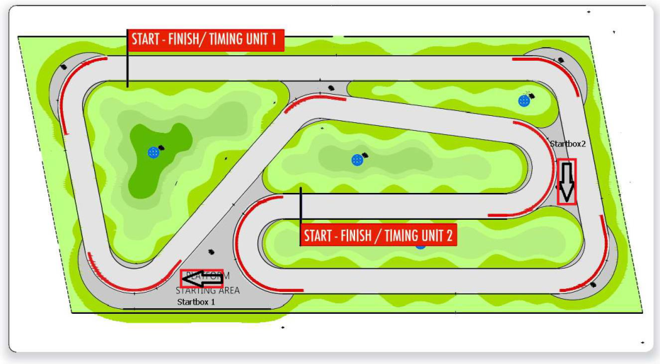
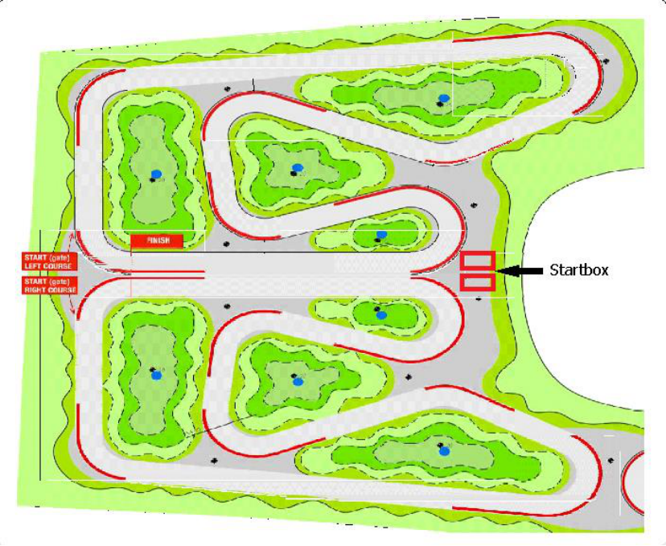
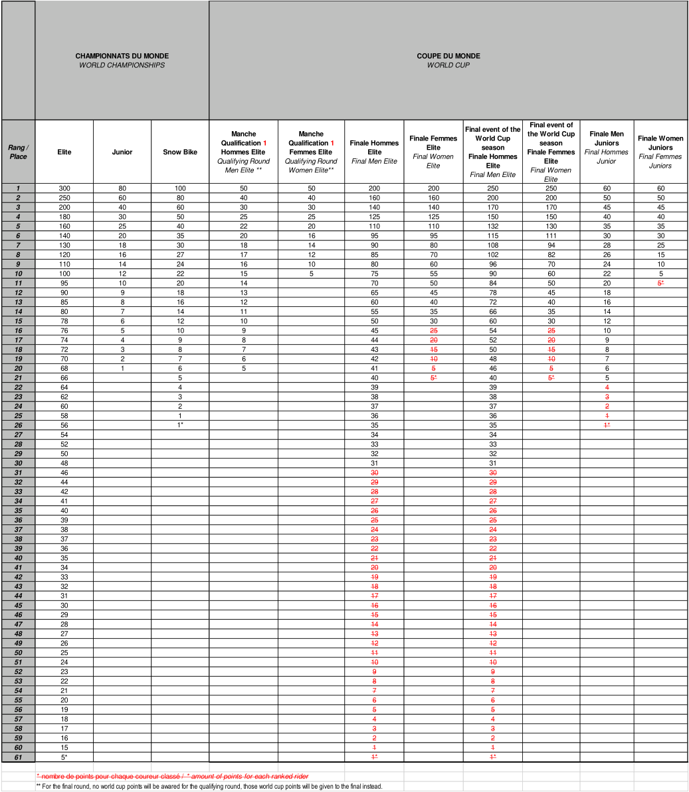

Part 4 — Mountain Bike (amendments 01.01.2025)

MEMORANDUM
26.09.2024
PART IV – MOUNTAIN BIKE Rules amendments applying on 01.01.2025
Chapter I GENERAL RULES
§ 2 Age categories and participation
Cross-country Olympic – XCO
4.1.004 Except in the UCI World Championships, continental championships and, at the discretion of national federations, national championships, under 23 men and women can ride the events for elite men and women respectively, even if a separate event is being run for under 23 riders.
Separate under 23 XCO UCI World Cup events are organised for men and women. The first 5 men under 23 and the first 5 women under 23 of the last UCI XCO individual ranking of the preceding year can decide whether they want to race the entire UCI World Cup season as elite or under 23. All other under 23 riders must race the UCI World Cup season in the under 23 category.
Separate under 23 XCO hors class and class 1 events may be organized for men and women, in this case separate results must be submitted for both categories. ~~If the under 23 events are organised on a different day from the elite events, under 23 riders my take part in both events.~~ During class 2 and class 3 XCO events under 23, men and women, will compete with the elite categories. As such no separate results must be submitted for the under 23 categories at class 2 and class 3 XCO events.
(text modified on 1.10.13; 1.01.22; 1.01.25)
Downhill – DH
4.1.006 Except for the UCI World Championships, UCI World Cup and Continental Series, downhill events are open to all riders aged 17 or over.
At the UCI World Championships, ~~and a~~ t the UCI World Cup and at the Continental Series, separate junior events must be organized for men and women (aged 17 and 18).
For all other downhill events on the international calendar, the UCI points are awarded in relation to the riders’ time and not to their category. To ensure that this rule is correctly applied, only one combined result needs to be sent to the UCI.
Comment: When a junior downhill rider would score the best time at the national championships, (s)he must wear the elite jersey. The junior jersey is not awarded in this case.
(text modified on 1.07.12; 1.10.13; 4.04.14; 1.01.17; 1.01.25)
Page 1 / 54
Allée Ferdi Kübler 12 1860 Aigle Switzerland
T: +41 24 468 58 11 E: admin@uci.ch

Enduro - EDR
-
4.1.007 ~~Enduro events are open to all riders aged 17 or over. No separate results must be~~
-
bis ~~submitted for the juniors, under 23 or elite categories.~~
Except for the UCI World Championships and UCI World Cup, enduro events are open to all riders aged 17 or over.
At the UCI World Championships and at the UCI World Cup, separate enduro junior events must be organized for men and women (aged 17 and 18).
For all other enduro events on the international calendar, the UCI points are awarded in relation to the riders’ time and not to their category. To ensure that this rule is correctly applied, only one combined result shall be sent to the UCI. (article introduced on 1.01.13; text modified on 1.01.23; 1.01.25)
§ 3 Calendar
4.1.011 International mountain bike races are registered on the UCI international calendar in accordance with the following classification:
-
Olympic Games (OG)
-
No other international mountain bike event of cross-country (XC) may be organised during the mountain bike competition of the Olympic Games.
-
UCI World Championships (CM)
-
No other international mountain bike event of the same format may be organised during the UCI World Championships.
-
UCI World Cup (CDM)
-
No hors class or class 1 event of the same format may be organised on the same continent on the same day as a UCI World Cup event.
-
The continental championships (CC) and national championships (CN) in a format may not be organised during a UCI World Cup event in the same format.
-
UCI Masters World Championships (CMM)
-
Continental championships (CC)
-
No hors class or class 1 event of the same format may be organised on the same continent on the same day as a continental championships.
-
Continental Series (CS)
-
Upon consultation with the respective Continental Confederation, the UCI will appoint a certain number of events to be part of each Continental Series in accordance with the dedicated document publised by the UCI.
-
Stage races
-
Class: Hors class (SHC) / Class 1 (S1) / Class 2 (S2)
-
No stage race hors class may be organised during the mountain bike competition of the Olympic Games, or the UCI World Championships cross-country (XC) or marathon, UCI World Cup events in the concerned continent.
Page 2 / 54
Allée Ferdi Kübler 12 1860 Aigle Switzerland
T: +41 24 468 58 11 E: admin@uci.ch

-
No stage ~~r~~ ace, in HC or C1, may be organised during the Continental championships on the same day(s) as any cross-country (XC) race, on the concerned continent.
-
One-day races
-
Class: Hors class (HC) / Class 1 (C1) / Class 2 (C2) / Class 3 (C3)
-
UCI XCO junior series:
-
The UCI will appoint a certain number of UCI XCO junior series events every year in accordance with the dedicated document published by the UCI.
-
National Championships:
-
National championships cannot be run during the mountain bike competition at the Olympic Games, UCI World Championships or UCI World Cup of the same format and cannot be run during continental championships of the same format on the concerned continent.
-
Cross-country Olympic (XCO) or cross-country short track (XCC) national championships cannot be run during an international mountain bike race. For all other formats, in the event a national championship is incorporated in an international mountain bike race, a rider can only receive points once. The riders with the sporting nationality of the national federation will receive the national championships points according to their rank in the race (i.e. including all riders regardless of their sporting nationality) and other riders will receive the class event points according to their rank in the race.
-
▪ Regional Games (JR)
The events status for stage races and one-day races are allocated to each event annually by the UCI on the basis of the commissaires race report from the preceding year and any other information at disposal of the UCI. A new event may only be given class 2 or 3 status in its first year.
-
HC status can only be given with the following cumulative conditions: ▪ Event registered for at least the last three years as C1 on the UCI International Calendar
-
A separate under 23 race registered for both genders for XCO
-
At least eight riders from the top 50 of the UCI ranking for both gender
-
▪ At least ten nations represented in the last edition of the event
-
A high level tv production for the Elite categories taking into account the sporting aspect
Under exceptional circumstances and justified reasons related to development, the UCI can grant derogations awarding HC status to events which do not meet the criteria above.
A detailed technical guide for HC events, stage races and new events must be presented to UCI during the calendar registration process. A template for such technical guide is provided by UCI upon request. All events registered on the UCI international calendar must respect the UCI financial obligations (in particular calendar fee, prize money) approved by the UCI and published on the UCI website.
Page 3 / 54
Allée Ferdi Kübler 12 1860 Aigle Switzerland
T: +41 24 468 58 11 E: admin@uci.ch

Race entry fees for events on the international calendar are waived for any rider belonging to a ~~UCI ELITE MTB TEAM~~ UCI MTB WORLD SERIES TEAM. This applies only to the format in which the team has ~~elite~~ UCI MTB WORLD SERIES TEAM status and does not apply to stage races, eliminator and enduro events. (text modified on 1.02.12; 1.10.13; 4.04.14; 1.01.16; 1.01.17; 1.01.19, 1.01.21; 1.01.22; 1.01.23; 1.01.24; 1.01.25).
§ 4 Technical delegate
- 4.1.012 For the Olympic Games, UCI World Championships, UCI World Cup events and continental championships a technical delegate is appointed by the UCI. The UCI may delegate the appointment of a technical delegate to the third party of its choice.
(text modified on 1.01.25)
§ 6 Event procedure
-
4.1.036 The riders must respect nature and must make sure that they do not pollute the course venue. If a drop zone is implemented on the course, riders must use it and must abide by any instructions given in this respect. (text modified on 1.01.25)
-
§ 7 Equipment
-
4.1.041 ~~During~~ In the context of MTB races ~~no~~ riders registered for the event are not permitted to use an ~~E-Mountain Bike~~ EPAC, in the sense of article 1.3.010bis, on the course at any time during training ~~and~~ or competition.
~~E-Mountain Bikes~~ EPACs are exclusively allowed in training and competition at ~~the~~ E-Mountain Bike ~~competitions~~ events ~~as specified~~ pursuant to ~~in~~ Chapter VIII. (article introduced on 1.01.18, text modified on 1.01.19; 1.01.20; 1.01.23; 1.01.25).
§ 10 UCI International Elite Number System
- 4.1.049 Riders who have won an Elite UCI World Cup race (XCO, DHI) will be asked to select a career number (2-999).
Upon retirement being confirmed to the UCI or communicated publicly, a rider's unique career number will be made available for allocation to other riders.
Elite riders will be asked to select their number in descending order starting with the rider who currently has the highest number of UCI World Cup wins.
For the UCI World Cup, the current UCI World Cup leader will race with number 1, superseding his unique career number. (article introduced on 1.01.25)
Page 4 / 54
Allée Ferdi Kübler 12 1860 Aigle Switzerland
T: +41 24 468 58 11 E: admin@uci.ch

Chapter II CROSS-COUNTRY EVENTS
§ 1 Race characteristics
Cross-country Olympic – XCO
- 4.2.001 The duration and lap length of cross-country Olympic event in the different race classifications in the table below must lie within the following ranges or as close as possible to the race length (in hours and minutes).
| UCI World Championships, UCI World Cup, Continental championships, Continental Series, Hors class, Class 1 events |
UCI World Championships, UCI World Cup, Continental championships, Continental Series, Hors class, Class 1 events |
Class 2 events | Class 2 events | Class 3 events | Class 3 events | |
|---|---|---|---|---|---|---|
| Race time |
Lap length | Race time |
Lap length |
Race time | Lap length | |
| Men juniors | 1:00 - 1:15 |
3.5km - 6km |
1:00 - 1:15 |
4km - 10km |
1:00 - 1:15 | No restriction, and any race format |
| Women juniors | 1:00 - 1:15 |
1:00 - 1:15 |
1:00 - 1:15 | |||
| Men under 23 | 1:15 - 1:30 |
N/A* | N/A* | |||
| Women under 23 | 1:15 - 1:30 |
N/A* | N/A* | |||
| Men elite | 1:20 - 1:40 |
1:30 - 2:00 |
No restriction |
|||
| Women elite | 1:20 - 1:40 |
1:30 - 2:00 |
*under 23 compete with elite
(text modified on 1.10.13; 4.04.14; 1.01.17; 1.01.23; 1.01.25)
§ 5 Feed/Technical Assistance zone
- 4.2.038 The feed/technical assistance zones must be wide and long enough to allow the passing of riders not stopping in the zone.
For UCI World Cup events they must furthermore include the following four areas:
-
one part for ~~UCI ELITE MTB TEAM~~ UCI MTB WORLD SERIES TEAMS;
-
one part for UCI MTB TEAMS;
-
one area for national teams;
-
another area for individual riders or members of teams not registered with
-
the UCI (who are treated as individual riders).
Staff working for riders must wear readily identifiable team clothing. (text modified on 1.01.20; 1.01.23; 1.01.25).
Page 5 / 54
Allée Ferdi Kübler 12 1860 Aigle Switzerland
T: +41 24 468 58 11 E: admin@uci.ch

4.2.040
For the Olympic Games, UCI World Championships, UCI World Cup events and continental championships nobody may enter a feed/technical assistance zone without accreditation. This rule does not apply for the marathon UCI World Championships.
For the Olympic Games, UCI World Championships and continental championships, accreditations are issued by the commissaires' panel.
For UCI World Cup events season long accreditations issued to the ~~UCI ELITE MTB TEAM~~ UCI MTB WORLD SERIES TEAMS and UCI MTB TEAMS by the UCI. For the national federations or individual riders passes are prepared by the organiser and handed out at registration: they obtain 1 accreditation per registered rider per zone. Note that for a double feed/technical assistance zone they only obtain 1 accreditation per registered rider. (text modified on 1.01.20; 1.01.23; 1.01.24; 1.01.25).
§ 6 Technical assistance
4.2.049
In addition to technical assistance in feed zones, technical assistance is permitted outside these zones only between riders who are members of the same ~~UCI ELITE MTB TEAM~~ UCI MTB WORLD SERIES TEAM, UCI MTB TEAM or of the same national team. For the UCI World Championships, technical assistance is permitted only between riders of the same national team.
Riders may carry tools and spare parts provided that these do not involve any danger to the rider himself or the other competitors. (text modified on 1.01.20; 1.01.23; 1.01.25)
§ 8 Event procedure
4.2.064
The decision as to whether the 80% rule is to be applied for Olympic crosscountry events (XCO) or cross-country short track events (XCC) is made by the president of the commissaires' panel after discussion with the organiser. Any rider whose time being 80% slower of that of the race leader's first lap is pulled out of the race. He is required to leave the race at the end of his lap in the zone provided for the purpose (the "80% zone") except when the rider is on his final lap. For Olympic cross-country events at continental championships, UCI World Cups, UCI World Championships and the Olympic Games, the 80% rule must be applied.
(text modified on 1.01.25)
§ 9 Stage races
4.2.075 Other general classifications for men and women, such as points general classification, mountains general classification, and the men's and women's team general classifications are optional.
In stage races where there is a team general classification, there are only three types of teams that may compete for the classification:
− ~~UCI ELITE MTB TEAM~~ UCI MTB WORLD SERIES TEAMS
- UCI MTB TEAMS
Page 6 / 54
Allée Ferdi Kübler 12 1860 Aigle Switzerland
T: +41 24 468 58 11 E: admin@uci.ch

− National teams.
Except in the case of team time trials, both the men's and women's team general classification is established by adding the times of the two best riders in each stage
(text modified on 1.01.23; 1.01.25).
Chapter III DOWNHILL EVENTS
§ 1 Organisation of competition
4.3.001
Downhill events are composed of:
A single run format for the final must be used. Prior thereto, there ~~This~~ shall be ~~involve~~ either:
-
One or two ~~a~~ qualifying run(s), called the qualifying round(s) following which a predetermined number of riders set by the particular race regulations are admitted to a ~~semi-final or~~ final. The fastest rider of the final is declared the winner.
-
a seeding run that determines the start order for a single run in which the rider with the fastest time wins.
For Mass start, events are composed of a:
-
qualifying round (time trial where a number of riders qualify for the final, number of riders to qualify must be set by the organiser in his technical guide), which will also serve to determine the start order.
-
- marathon downhill (mass start downhill)
Each organizer should state in their technical guide which one of the two options will be applied to their event.
(text modified on 1.07.12; 1.10.13; 4.04.14; 1.01.23; 1.01.25)
§ 2 Course
4.3.006 The length of the course and the duration of the event are determined as follows: Maximum Course length 3500 m Duration of the event 5 minutes
| UCI World Championships, UCI World Cup, continental championships, Continental Series, Hors Class,class 1 events |
UCI World Championships, UCI World Cup, continental championships, Continental Series, Hors Class,class 1 events |
Class 2 events | Class 2 events | Class 3 events |
|
|---|---|---|---|---|---|
| Minimum | Maximum | Minimum | Maximum | ||
| Duration of the event |
2 minutes |
5 minutes | 1 minute | 5 minutes | No restriction |
Page 7 / 54
Allée Ferdi Kübler 12 1860 Aigle Switzerland
T: +41 24 468 58 11 E: admin@uci.ch

(text modified on 1.01.16; 1.01.25)
§ 6 Training
4.3.023
Riders must start all training runs at the official start gate. Any rider starting a training run below the start line must be disqualified from the competition.
At the discretion of the President of the Commissaires’ Panel, riders may be permitted to start at a designated point on the course. (text modified on 1.01.25).
§ 7 Transport
4.3.025
The organiser must provide transport capable of carrying ~~100~~ 250 riders and their bikes per hour to the top of the course. (text modified on 1.01.25).
Chapter VI PUMP TRACK
§ 2 Categories
4.6.002 International categories are “open men” and “open women”. Riders must be 17 years of age in order to compete. No separate results shall be submitted for the juniors, under 23 or Elite categories.
All Pump Track events will be considered as Class 3 events.
Event organisers are free to have either age or ability categories for other riders.
Categories for children shall follow any age limits set by the local laws.
For participation in events on the international calendar, riders' categories are determined by the age of those competing as defined by the difference between the year of the event and the year of birth of the rider. (text modified on 1.01.20; 1.01.25).
§ 4 Course
4.6.005 A pump track can be defined by either a start and a finish, or by a properly marked closed circuit design. It is recommended that a pump track has a compact, hard surface that withstands weather and erosion.
Generally, the pump track should be on a flat ground or on a moderate slope. It should include a mixture of rollers and banked turns. The design is free and can include uphills and downhills, as long as “pumping” is more efficient than pedalling. Pedalling shall not be an advantage. (text modified on 1.01.25).
Page 8 / 54
Allée Ferdi Kübler 12 1860 Aigle Switzerland
T: +41 24 468 58 11 E: admin@uci.ch

§ 5 Competition Format
Race Formats
- 4.6.006 A competition consists of a free practice session, qualification and elimination heats.
At the start riders are positioned at least ~~10~~ 30 meters from the start/finish line and get ready with one foot on the ground. The distance between the starting point and start/finish line shall contain an adequate number of rollers and turns to gain maximum speed (without pedaling). The starting point should be a marked rectangular area, adequate to fit a bike in length and width (170 cm x 50 cm). Alternatively, a BMX type start gate may be used. If so, it should be used without the automated start procedure (no lights, nor sound) and still with one foot on the ground for the rider. The only start procedure notification should be a verbal “Riders Ready” from the starter. (text modified on 1.01.21; 1.01.22; 1.01.25)
Elimination heats
4.6.010 The main event compromises of elimination heats. Riders advancing from the qualification will go head-to-head in the main event heats.The elimination heats can be run with all kinds of race formats explained below.
Rider pairings will be determined based on their ranking following the qualification. The fastest rider (1[st] placed) will go head-to-head against the slowest rider (8[th] / 16[th] / 32[nd] placed).
The fastest rider from reach heat advances to the next round, until there are only 2 riders remaining who will compete in the final.
The main event heats can be run in 4 formats:
-
Head-to-head – Pursuit
-
Head-to-head – Dual
-
Solo runs
-
Open Session
For the UCI World Championships, there is a special open session format as detailed in the technical guide of the event.
(text modified on 1.01.21; 1.01.25)
Head-to-head - Pursuit
4.6.011 The track needs to be equipped with 1 or 2 timing units (depending on the track layout). The timing units shall be placed in co-operation with the commissaire.
-
Riders will go head-to-head riding on the track at the same time, starting at different positions and ride in the same direction.
-
The rider with the fastest qualification time has priority on their start position (1 or 2).
-
The rider must line up at the start line, with one foot on the ground.
-
The time starts running as soon as the riders cross their start / finish timing line and stops when they cross it again.
-
The fastest rider will advance to the next round.
Page 9 / 54
Allée Ferdi Kübler 12 1860 Aigle Switzerland
T: +41 24 468 58 11 E: admin@uci.ch

-
If a rider does not complete a full run, rider will be scored DNF without rerun.
-
In the event of a tiebreak (two or more riders have the same time) the time from the previous round or the qualification rounds will determine the winner.

Example of track and timing layout. (text modified on 1.01.21; 1.01.25)
Head-to-head - Dual
-
4.6.012 The track needs to be equipped with 1 timing unit and 2 start mechanisms (preferred). The timing units shall be placed in co-operation with the commissaire.
-
Riders will go head-to-head at the same time.
-
The rider with the fastest qualification time has priority on its start position (1 or 2)
-
The rider must line up at the start line, with one foot on the ground.
-
- The race starts as soon as the start mechanism starts the time and stops when the riders cross the finish line.
-
The rider who crosses the finish line 1st advances to the next round
-
Depending on the track layout, this format requires 2 runs per
- elimination heat (to be defined by the commissaire).
-
Run 1: The rider with the fasted timed run will start on the left course, at the same time the other rider starts on the right course. The riders go head-to-head and they both set a time. The maximum time difference / penalty is 1.5 sec (for example if a rider crashes).
-
Run 2: Both riders switch lanes. The riders go head-to-head for the second time and they both set a 2nd time.
-
The combination of both times (left and right course) per rider determines the riders overall time.
Page 10 / 54
Allée Ferdi Kübler 12 1860 Aigle Switzerland
T: +41 24 468 58 11 E: admin@uci.ch

-
The winner of the heat is the rider with the fastest combined time and they advance to the next round.
-
In the event of a tiebreak (two or more riders have the same time) the time from the Qualification round will determine the winner.

- Example of track and timing layout. (text modified on 1.01.21; 1.01.25)
Solo runs
-
4.6.013 The track needs to be equipped with 1 timing unit. Timing units to be placed in co-operation with the commissaire.
-
2 riders will race against each other, in a separate run on the exact same track.
-
The rider must line up at the start line, with one foot on the ground.
-
The rider with the slower qualification time starts first in each of the rounds in the elimination heats down to the finals.
-
The riders only have 1 run to set a time.
-
The rider with the fastest time advances to the next round.
-
If a rider does not complete a full run, rider will be scored DNF without rerun.
-
In the event of a tiebreak (two or more riders have the same time) the time from the Qualification round will determine the winner.
-
(article modified on 1.01.21; 1.01.25)
Page 11 / 54
Allée Ferdi Kübler 12 1860 Aigle Switzerland
T: +41 24 468 58 11 E: admin@uci.ch

4.6.015 Running order
-
Women's rounds followed by men’s rounds of 32nd rider
-
Starting with rounds of 32nd rider
-
Round of 16, round of 8
-
Women big final
-
Men big final
Heat order (men follow the running order until they reach the round where women will start).
(article modified on 1.01.25)
4.6.016 Open session
An active transponder timing system and a screen are required to run this format. Qualification session
-
The track is open for a fixed pre-determined session time (length of session is based on average lap time, track layout and number of riders).
Page 12 / 54
Allée Ferdi Kübler 12 1860 Aigle Switzerland
T: +41 24 468 58 11 E: admin@uci.ch

-
Start order for the first run (in session) determined by plate number.
-
Riders can do as many laps as they want during the session.
-
The fastest lap of each rider counts.
-
After the open session, the fastest 32 riders advance to the elimination session.
-
If there are 31 and less riders in the open session, the fastest 16 advance to the elimination session.
-
If there are 15 and less riders in the open session, the fastest 8 advance to the elimination session.
-
If there are 7 and less riders in the open session, the fastest 4 advance to the elimination session.
Elimination heats
-
The track is open for a fixed pre-determined session time during elimination (length of session is based on average lap time and track layout).
-
Start order for the first run (in session) determined by results from the qualification session. Fastest qualifier starts first in each round and session.
-
Top 32 - fastest 16 riders advance to the next round.
-
Top 16 - fastest 8 riders advance to the next round.
-
Quarter final - fastest 4 riders advance to the semi-final.
-
Semi-final - fastest 2 riders advance to the big final - slowest 2 riders to the small final.
-
Small final - 2 riders, one run each - fastest rider got 3[rd] overall.
-
Big final - 2 riders, one run each - fastest rider wins overall.
-
If a rider fails to start in a particular round, they cannot advance to the next round.
-
In the event of a tiebreak (two or more riders have the same time) the time from the previously completed round will determine the winner. As an exception, in the Small Final and Big Final, a re-run will determine a winner
(text modified on 1.01.21; 1.01.25).
Chapter VIII E-MOUNTAIN BIKE
§ 1 General
~~The Events~~ Use of EPACs
4.8.001
~~An E-Mountain Bike, is a bike operated with two energy sources, human pedal power and an electric engine, which only provides assistance when the rider is pedaling. Only~~ “ ~~Pedelec~~ ” ~~type of bikes are allowed in UCI event.~~
Only EPACs, in the sense of article 1.3.010bis, are authorized for use in E- Mountain Bike events. ~~must be organised in accordance with the following bike standards:~~
~~Engine with a maximum continuous rated power of 250 watts~~
~~Engine assistance up to 25km/h~~
~~Pedalling assistance only, although a start-up assistance not exceeding without pedalling is allowed~~
(text modified on 1.01.25)
Page 13 / 54
Allée Ferdi Kübler 12 1860 Aigle Switzerland
T: +41 24 468 58 11 E: admin@uci.ch

Events format and characteristics
4.8.003 E-Mountain Bike events will be organised in the cross-country and Enduro formats and will be registered as Class 3 events. No UCI points will be awarded for E-Mountain Bike events.
The characteristics and formats of events, ~~bikes~~ specifications of EPACs, and ~~check~~ verification procedures ~~as well as the characteristics and format of each event~~ will be determined in the technical guide for each E-Mountain Bike event. The technical guide ~~officiates~~ serves as regulation ~~reference~~ for each specific event in such matter not governed by the UCI Regulations. (text modified on 1.01.25)
Registration
- 4.8.004 The rider’s registration procedure is handled by the ~~UCI appointee~~ organizer of an E-Mountain Bike event. (text modified on 1.01.25)
Battery
- 4.8.005 Riders can only use the battery ~~in place~~ fitted on their bike at the start and cannot carry an additional battery during the competition. (text modified on 1.01.25)
Chapter IX UCI MOUNTAIN BIKE WORLD SERIES
§ 1 General
4.9.001 The UCI Mountain Bike World Series is the exclusive property of the UCI.
The UCI Mountain Bike World Series is made up of the UCI World Cup in the race types:
-
Cross-country (see Chapter X);
-
Downhill (see Chapter XI);
-
~~Marathon (see Chapter XII);~~
-
Enduro (see Chapter XIII).
The UCI World Cups of each of the above-mentioned race types are the exclusive property of the UCI.
(text modified on 1.01.25).
Registration
4.9.003 All riders must be registered using the ~~UCI~~ online registration system through a dedicated website provided by the UCI or its promoter, if any. ~~UCI ELITE MTB TEAM~~ UCI MTB WORLD SERIES TEAMS and UCI MTB TEAMS register their riders. National federations register the other riders who qualify under provisions on participation.
A table showing the opening and closing dates for entries is published on the UCI website.
(text modified on 1.01.25).
Page 14 / 54
Allée Ferdi Kübler 12 1860 Aigle Switzerland
T: +41 24 468 58 11 E: admin@uci.ch

4.9.005 Late entries from ~~UCI ELITE MTB TEAM~~ UCI MTB WORLD SERIES TEAMS, UCI MTB TEAMS, national federations and riders are refused unless authorised and subject to compliance with provisions for participation as well as payment of a fine of EUR 300.
Late entries are entries handled after the on-line registration deadline and before the riders’ confirmation deadline. Passed the riders’ confirmation deadline late are not considered.
(text modified on 1.01.25).
Chapter X UCI MOUNTAIN BIKE CROSS-COUNTRY WORLD CUP
Participation
4.10.001 UCI Cross-country World Cup events (XCO and XCC) are open to riders corresponding to the following categories and criteria:
| Category | One of the below mentioned criteria needs to be fulfilled |
One of the below mentioned criteria needs to be fulfilled |
|---|---|---|
| XCO - men elite (aged 23 and over) XCO - women elite (aged 23 and over) |
1. 2. 3. 4. 5. 6. 7. 8. 9. |
UCI MTB WORLD SERIES TEAM, maximum 4 riders per race and category 8 UCI MTB TEAM wildcards, maximum 4 riders per race and category decided one month prior to the event Any rider ranked in the top 100 of the last UCI XCO individual ranking before the event entry closing date (one month prior to the event) The national federations may enter a maximum of~~6 ~~3 supplementary riders per category. These riders must wear national team clothing. Top five riders of any round of a Continental Series limited to 1 round of the current UCI MTB World Cup (Golden Ticket) Top five riders from the final standings of any of the Continental Series of the previous year, Elite (from 2026) Top five riders from the final standings of any of the Continental Series of the previous year, U23 (if progressing into Elite category) (from 2026) Current Olympic Champion, UCI World Champion, Continental Champion, National Champions ~~Having obtained at least 60 UCI points in the UCI~~ ~~XCO individual reference ranking (*).~~ |
| XCO - men under 23 (aged from 19 to 22) XCO - women under 23 (aged from 19 to 22) |
1. 2. 3. |
UCI MTB WORLD SERIES, maximum 4 riders per race and category 8 UCI MTB TEAM wildcards, maximum 4 riders per race and category decided one month prior to the event Any rider ranked in the top 200 of the last UCI XCO individual ranking before the event entry closing date (one month prior to the event) |
Page 15 / 54
Allée Ferdi Kübler 12 1860 Aigle Switzerland
T: +41 24 468 58 11 E: admin@uci.ch

| 4. 5. 6. 7. 8. ~~9~~ |
The national federations may enter a maximum of~~6~~ 4 supplementary riders per category. These riders must wear national team clothing. Top five riders of any round of a Continental Series, limited to 1 round of the current UCI MTB World Cup (Golden Ticket) Top five riders from the final standings of any of the Continental Series of the previous year, U23 (from 2026) Top five riders from the final standings of any of the Continental Series of the previous year, Junior (if progressing into U23 category) (from 2026) UCI World Champion, Continental Champion, National Champions ~~Having obtained at least 80 UCI points in the UCI~~ ~~XCO individual reference ranking (*)~~ ~~The national federation of the organizing country may~~ ~~register a supplementary team B of 6 maximum riders~~ ~~(wearing national team clothing)~~ ~~Riders belonging to a UCI ELITE MTB TEAM or a UCI~~ ~~MTB TEAM~~ |
|||
|---|---|---|---|---|
| ~~.~~ ~~10~~ |
||||
| ~~.~~ 11. |
||||
| ~~XCO - women under 23 (aged from 19~~ ~~to 22)~~ |
~~1~~ | ~~Having obtained at least 20 UCI points in the UCI~~ ~~XCO individual reference ranking (*)~~ ~~The national federations may enter a maximum of 6~~ ~~supplementary riders per category. These riders must~~ ~~wear national team clothing.~~ ~~The national federation of the organizing country may~~ ~~register a supplementary team B of maximum 6 riders~~ ~~(wearing national outfit required)~~ ~~Riders belonging to a UCI ELITE MTB TEAM or a UCI~~ ~~MTB TEAM~~ |
||
| ~~.~~ ~~2~~ |
||||
| ~~.~~ ~~3~~ |
||||
| ~~.~~ ~~4~~ |
||||
| ~~.~~ | ||||
| XCC – men elite (aged 23 and over) XCC – women elite (aged 23 and over) XCC – men under 23 (aged from 19 to 22) XCC – women under 23 (aged from 19 to 22) |
A maximum of 40 riders per gender already registered and confirmed for the XCO event taking place during the same weekend shall be allowed to start in the XCC event. The riders shall be selected as per article 4.10.003 to reach a total number of 40 riders per gender. No online registration is required for the XCC event. The same bike must be used for XCC and XCO. For XCC, the minimum tyre width must be 45mm. |
~~(*)The date of such reference rankings is fixed and communicated by the UCI for each event of the UCI World Cup on the UCI website.~~
Riders registration can be done only by a ~~UCI ELITE MTB TEAM~~ UCI MTB WORLD SERIES TEAM, a UCI MTB TEAM or a national federation.
If a rider that confirmed his participation to the XCC event is not starting, he will not be allowed to start the XCO event on the same world cup round unless if the rider has been declared incapable of taking the start of the XCC event by the organiser’s chief medical officer or the team doctor.
Page 16 / 54
Allée Ferdi Kübler 12 1860 Aigle Switzerland
T: +41 24 468 58 11 E: admin@uci.ch

Criteria to award the 8 UCI MTB TEAM wildcards (as per point 2 of the participation criteria) per event will be based on the:
-
UCI team ranking, current and previous season
-
Profile of any individual riders
-
UCI Team composition (multi-category, multi-gender)
-
Profile of team sponsors (out of industry, global, etc.)
-
Media profile of team (social media, etc.)
-
Any injury issues during current or previous season
-
Anti-doping history
-
Home country of team
-
Continental Series team standing
Prior to making a decision, the UCI can request the production of information or documents to assess the criteria above.
(text modified on 1.01.25).
4.10.002 Riders must display their handlebar numbers during training sessions and also their back number during the race.
A coach of a national team or a ~~UCI ELITE MTB TEAM~~ UCI MTB WORLD SERIES TEAM or a UCI MTB TEAM wishing the reconnoitre the course must request a handlebar number. The coach must also hold a valid licence and wear a helmet.
(text modified on 1.01.25).
4.10.003
The start order is determined as follows:
- A. XCC men elite and women elite, XCC men under 23 and women under
23
-
riders ranked in the top 16 of the most recently published XCO UCI World Cup standings (not applicable for the first UCI World Cup round of the season)
-
as per the most recently published UCI XCO individual ranking
Riders with injury status shall be integrated in the start order in accordance with article 4.10.011.
Riders with pregnancy status shall be integrated in the start order in accordance with article 4.10.012.
-
B. XCO men elite and women elite
-
the riders ranked in the top 24 of the XCC race of the same UCI World Cup round
-
the place 25th to 32nd will be allocated as per the most recently published UCI XCO individual ranking.
-
Place 33rd to 40th of the start order will be allocated to riders ranked in below rankings, unless they are listed on the start order between the place 1st to 32nd according to point 1 and 2 above:
Page 17 / 54
Allée Ferdi Kübler 12 1860 Aigle Switzerland
T: +41 24 468 58 11 E: admin@uci.ch

- top 10 of the UCI cyclo-cross individual ranking
- top 20 of the UCI road individual world ranking
-
The place 33rd to 40th will be allocated following the rank of each rider, whatever the ranking: UCI cyclo-cross or UCI road world ranking. If two or three riders have the same ranking, they will be placed by drawing lots.
-
as per the most recently published UCI XCO individual ranking.
-
unclassified riders: by drawing lots.
Riders with injury status shall be integrated in the start order in accordance with article 4.10.011.
Riders with pregnancy status shall be integrated in the start order in accordance with article 4.10.012.
-
C. XCO men under 23 and women under 23:
-
the riders ranked in the top 24 of the XCC race of the same UCI World Cup round
-
as per the most recently published UCI XCO individual ranking
-
unclassified riders; by drawing lots
Riders with injury status shall be integrated in the start order in accordance with article 4.10.011.
Riders with pregnancy status shall be integrated in the start order in accordance with article 4.10.012.
~~Teams and national federations who submitted a late registration which was approved by the UCI are allocated the next available highest race number, with the exception of the riders ranked in the top 16 (men elite, women elite, men under 23, women under 23) of the most recent UCI XCO World Cup standings for whom the race number is reserved (not applicable for the first UCI World Cup round of the season). However, they are called to the start line in the order specified earlier in this article~~
(text modified on 1.01.24; 1.01.25)
Official ceremony
4.10.007 The official ceremony takes place immediately after each race. Riders arriving later than 5 minutes after they finished their race are fined.
The following riders must attend:
-
the first ~~five~~ three riders in the elite XCO events;
-
the first three riders in the elite XCC events;
-
the leader of the elite UCI World Cup standings after the event in question (XCO, XCC);
-
the first three riders in the under 23 events (XCO, XCC);
-
the leader of the under 23 UCI World Cup standings after the event in question (XCO, XCC);
Page 18 / 54
Allée Ferdi Kübler 12 1860 Aigle Switzerland
T: +41 24 468 58 11 E: admin@uci.ch

-
the team leading the team standings after the event in question (specified in article 4.10.009);
-
the team of the day.
N.B - Bicycles cannot be taken onto the podium. However, an area is provided in front of the podium to display the bicycle of the winner during the official ceremony.
(text modified on 1.01.25).
4.10.009 A team standing is drawn up for each round of the UCI World cup. Only riders registered in a ~~UCI ELITE MTB TEAM~~ UCI MTB WORLD SERIES TEAM or a UCI MTB TEAM can score points for their team in accordance with the team standing table in article 4.10.010.
For cross-country, a mixed team classification ~~for men elite and a team classification for women elite~~ is drawn up. The team classification is drawn up by summing the total points (XCC and XCO) of the ~~3~~ 4 highest scoring riders of each team without making a distinction between men elite, men under 23, women elite and women under 23. Teams with only one or two or three riders scoring points are also included in the team classification. Tied teams will have their relative positions determined by their best ranked rider within the top 30 of the XCO event. Should there still be a tie, the order is determined by the best ranked rider within the top 30 of the XCC event.
After each round of the UCI World Cup, the team standings is drawn up by adding the points won in the team classification per event. Ties are separated by the largest number of 1st places, 2nd places, etc. Should there still be a tie, the order is determined by the team classification for the most recent UCI World Cup round.
The riders of the team leading the team standings are given leaders handlebar number plates which must be used during the UCI World Cup. (text modified on 1.01.25).
4.10.010
Points scale A. Cross-country Olympic (XCO) and cross-country short track (XCC) events
| Position | XCO men and women elite points |
XCO men and women under 23 points |
XCC men and women elite points |
XCC men and women elite (points allocated to the XCO standing) |
XCC men and women under 23 points |
XCC men and women under 23 (points allocated to the XCO standing) |
|---|---|---|---|---|---|---|
| 1 | 250 | 125 | 250 | 80 | 125 | 40 |
| 2 | 200 | 100 | 200 | 65 | 100 | 30 |
| 3 | 160 | 80 | 160 | 50 | 80 | 25 |
| 4 | 150 | 75 | 150 | 40 | 75 | 20 |
| 5 | 140 | 70 | 140 | 38 | 70 | 19 |
| 6 | 130 | 65 | 130 | 37 | 65 | 18 |
Page 19 / 54
Allée Ferdi Kübler 12 T: +41 24 468 58 11 1860 Aigle E: admin@uci.ch Switzerland

| 7 | 120 | 60 | 120 | 36 | 60 | 17 |
|---|---|---|---|---|---|---|
| 8 | 110 | 55 | 110 | 35 | 55 | 16 |
| 9 | 100 | 52 | 100 | 34 | 52 | 15 |
| 10 | 95 | 51 | 95 | 33 | 51 | 14 |
| 11 | 90 | 50 | 90 | 32 | 50 | 13 |
| 12 | 85 | 49 | 85 | 31 | 49 | 12 |
| 13 | 80 | 48 | 80 | 30 | 48 | 11 |
| 14 | 78 | 47 | 78 | 29 | 47 | 10 |
| 15 | 76 | 46 | 76 | 28 | 46 | 9 |
| 16 | 74 | 45 | 74 | 27 | 45 | 8 |
| 17 | 72 | 44 | 72 | 26 | 44 | 7 |
| 18 | 70 | 43 | 70 | 25 | 43 | 6 |
| 19 | 68 | 42 | 68 | 24 | 42 | 5 |
| 20 | 66 | 41 | 66 | 23 | 41 | 4 |
| 21 | 64 | 40 | 64 | 22 | 40 | |
| 22 | 62 | 39 | 62 | 21 | 39 | |
| 23 | 60 | 38 | 60 | 20 | 38 | |
| 24 | 58 | 37 | 58 | 19 | 37 | |
| 25 | 56 | 36 | 56 | 18 | 36 | |
| 26 | 54 | 35 | 54 | 17 | 35 | |
| 27 | 52 | 34 | 52 | 16 | 34 | |
| 28 | 50 | 33 | 50 | 15 | 33 | |
| 29 | 48 | 32 | 48 | 14 | 32 | |
| 30 | 46 | 31 | 46 | 13 | 31 | |
| 31 | 44 | 30 | 44 | 12 | 30 | |
| 32 | 42 | 29 | 42 | 11 | 29 | |
| 33 | 40 | 28 | 40 | 10 | 28 | |
| 34 | 38 | 27 | 38 | 9 | 27 | |
| 35 | 36 | 26 | 36 | 8 | 26 | |
| 36 | 34 | 25 | 34 | 7 | 25 | |
| 37 | 32 | 24 | 32 | 6 | 24 | |
| 38 | 30 | 23 | 30 | 5 | 23 | |
| 39 | 29 | 22 | 29 | 4 | 22 | |
| 40 | 28 | 21 | 28 | 3 | 21 | |
| 41 | 27 | 20 | ||||
| 42 | 26 | 19 | ||||
| 43 | 25 | 18 | ||||
| 44 | 24 | 17 | ||||
| 45 | 23 | 16 | ||||
| 46 | 22 | 15 | ||||
| 47 | 21 | 14 | ||||
| 48 | 20 | 13 |
Page 20 / 54
Allée Ferdi Kübler 12 T: +41 24 468 58 11 1860 Aigle E: admin@uci.ch Switzerland

| 49 | 19 | 12 | ||||
|---|---|---|---|---|---|---|
| 50 | 18 | 11 | ||||
| 51 | 17 | 10 | ||||
| 52 | 16 | 9 | ||||
| 53 | 15 | 8 | ||||
| 54 | 14 | 7 | ||||
| 55 | 13 | 6 | ||||
| 56 | 12 | 5 | ||||
| 57 | 11 | 4 | ||||
| 58 | 10 | 3 | ||||
| 59 | 9 | 2 | ||||
| 60 | 8 | 1 |
| B. Team standing Position 1 2 3 4 5 6 7 8 9 10 11 12 13 14 15 16 17 18 19 20 21 22 |
B. Team standing Position 1 2 3 4 5 6 7 8 9 10 11 12 13 14 15 16 17 18 19 20 21 22 |
||||
|---|---|---|---|---|---|
| Position | XCO men and women elite points |
XCC men and women elite points |
XCO men and women under 23 points |
XCC men and women under 23 points |
|
| 1 | 80 | 40 | 40 | 20 | |
| 2 | 75 | 39 | 39 | 19 | |
| 3 | 72 | 38 | 38 | 18 | |
| 4 | 70 | 37 | 37 | 17 | |
| 5 | 68 | 36 | 36 | 16 | |
| 6 | 66 | 35 | 35 | 15 | |
| 7 | 64 | 34 | 34 | 14 | |
| 8 | 62 | 33 | 33 | 13 | |
| 9 | 60 | 32 | 32 | 12 | |
| 10 | 58 | 31 | 31 | 11 | |
| 11 | 56 | 30 | 30 | 10 | |
| 12 | 54 | 29 | 29 | 9 | |
| 13 | 52 | 28 | 28 | 8 | |
| 14 | 50 | 27 | 27 | 7 | |
| 15 | 48 | 26 | 26 | 6 | |
| 16 | 46 | 25 | 25 | 5 | |
| 17 | 44 | 24 | 24 | 4 | |
| 18 | 43 | 23 | 23 | 3 | |
| 19 | 42 | 22 | 22 | 2 | |
| 20 | 41 | 21 | 21 | 1 | |
| 21 | 40 | 20 | 20 | ||
| 22 | 39 | 19 | 19 |
Page 21 / 54
Allée Ferdi Kübler 12 1860 Aigle Switzerland
T: +41 24 468 58 11 E: admin@uci.ch

| 23 | 38 | 18 | 18 | |
|---|---|---|---|---|
| 24 | 37 | 17 | 17 | |
| 25 | 36 | 16 | 16 | |
| 26 | 35 | 15 | 15 | |
| 27 | 34 | 14 | 14 | |
| 28 | 33 | 13 | 13 | |
| 29 | 32 | 12 | 12 | |
| 30 | 31 | 11 | 11 | |
| 31 | 30 | 10 | 10 | |
| 32 | 29 | 9 | 9 | |
| 33 | 28 | 8 | 8 | |
| 34 | 27 | 7 | 7 | |
| 35 | 26 | 6 | 6 | |
| 36 | 25 | 5 | 5 | |
| 37 | 24 | 4 | 4 | |
| 38 | 23 | 3 | 3 | |
| 39 | 22 | 2 | 2 | |
| 40 | 21 | 1 | 1 | |
| 41 | 20 | |||
| 42 | 19 | |||
| 43 | 18 | |||
| 44 | 17 | |||
| 45 | 16 | |||
| 46 | 15 | |||
| 47 | 14 | |||
| 48 | 13 | |||
| 49 | 12 | |||
| 50 | 11 | |||
| 51 | 10 | |||
| 52 | 9 | |||
| 53 | 8 | |||
| 54 | 7 | |||
| 55 | 6 | |||
| 56 | 5 | |||
| 57 | 4 | |||
| 58 | 3 | |||
| 59 | 2 | |||
| 60 | 1 | |||
| 60 | 1 |
Page 22 / 54
Allée Ferdi Kübler 12 1860 Aigle Switzerland
T: +41 24 468 58 11 E: admin@uci.ch

Chapter XI UCI MOUNTAIN BIKE DOWNHILL WORLD CUP
Participation 4.11.001 UCI Downhill World Cup events are open to riders corresponding to the following categories and criteria:
| Category | One of the below mentioned criteria needs to be fulfilled |
One of the below mentioned criteria needs to be fulfilled |
One of the below mentioned criteria needs to be fulfilled |
|---|---|---|---|
| DHI - men elite (aged 19 and over) DHI - women elite (aged 19 and over) |
1. 2. 3. 4. 5. 6. 7. 8. ~~9~~ |
UCI MTB WORLD SERIES TEAM, maximum 4 riders per race and category 8 UCI MTB TEAM wildcard, maximum 4 riders per race and category decided one month prior to the event Any rider ranked in the top 50 of the last UCI DHI individual ranking before the event entry closing date (one month prior to the event) The national federations may enter a maximum of 3 supplementary riders per category. These riders must wear national team clothing. Top five riders of any round of a Continental Series, limited to 1 round of the current UCI MTB World Cup (Golden Ticket) Top five riders from the final standings of any of the Continental Series of the previous year, Elite (from 2026) Top five riders from the final standings of any of the Continental Series of the previous year, Junior (if progressing into Elite category) (from 2026) Current UCI World Champion, Continental Champion, National Champions ~~Having obtained at least 40 UCI points in the UCI~~ ~~DHI individual reference ranking (*).~~ ~~Riders belonging to a UCI ELITE MTB TEAM or a~~ ~~UCI MTB TEAM~~ |
|
| ~~.~~ ~~10~~ |
|||
| ~~.~~ | |||
| DHI - men juniors (aged 17 and 18) DHI – women juniors (aged 17 and 18) |
1. 2. 3. 4. 5. 6. |
UCI MTB WORLD SERIES TEAM, maximum 4 riders per race and category 8 UCI MTB TEAM wildcard, maximum 4 riders per race and category decided one month prior to the event Any rider ranked in the top 100 of the last UCI DHI individual ranking before the event entry closing date (one month prior to the event) The national federations may enter a maximum of~~6~~ 4supplementary riders per category. These riders must wear national team clothing. Top five riders of any round of a Continental Series, limited to 1 round of the current UCI MTB World Cup (Golden Ticket) Top five riders from the final standings of any of the Continental Series of the previous year, Junior (from 2026) |
Page 23 / 54
Allée Ferdi Kübler 12 1860 Aigle Switzerland
T: +41 24 468 58 11 E: admin@uci.ch

-
Top five riders from the final standings of any of the Continental Series of the previous year, Cadet (if progressing into Junior category) (from 2026)
-
Current UCI World Champion
~~9. The national federation of the organising country may register a supplementary team B of maximum 6 riders (wearing national outfit required).~~
~~10. Riders belonging to a UCI ELITE MTB TEAM or a UCI MTB TEAM~~
- ~~(*)The date of such reference rankings is fixed and communicated by the UCI for each event of the UCI World Cup on the UCI website.~~
Riders registration can be done only by a ~~UCI ELITE MTB TEAM~~ UCI MTB WORLD SERIES TEAM, a UCI MTB TEAM or a national federation.
Criteria to award the 8 UCI MTB TEAM wildcards (as per point 2 of the participation criteria) per event will be based on the:
-
UCI team ranking, current and previous season
-
Profile of any individual riders
-
UCI Team composition (multi-category, multi-gender)
-
Profile of team sponsors (out of industry, global, etc.)
-
Media profile of team (social media, etc.)
-
Any injury issues during current or previous season
-
Anti-doping history
-
Home country of team
-
Continental series team standing
Prior to making a decision, the UCI can request the production of information or documents to assess the criteria above.
(text modified on 1.01.25).
~~Number allocation~~
- ~~4.11.002 Race number allocation will be determined by the UCI appointee. Season long race numbers will be allocated to the top 10 men elite and top 5 women elite from the final standings of previous UCI World Cup season.~~
(article abrogated on 1.01.25).
4.11.004 The start order for the qualifying rounds is determined as follows:
-
A. men elite, women elite:
-
riders ranked in the top ~~60~~ 20 men and the top ~~15~~ 10 women of the most recently published UCI World Cup standings (for the first event, as per the final world cup standings of the previous year), starting in reverse order.
-
as per the most recently published UCI DHI individual ranking, starting in reverse order.
-
unclassified riders: by drawing lots.
Riders with injury status shall be integrated in the start order in accordance with article 4.11.021.
Page 24 / 54
Allée Ferdi Kübler 12 1860 Aigle Switzerland
T: +41 24 468 58 11 E: admin@uci.ch

Riders with pregnancy status shall be integrated in the start order in accordance with article 4.11.022.
-
B. men juniors, women juniors:
-
riders ranked in the top ~~10~~ 20 men juniors and the top ~~3~~ 10 women juniors of the most recently published UCI World Cup standings (not applicable for the first UCI world cup round of the season), starting in reverse order.
-
as per the most recently published UCI DHI individual ranking, starting in reverse order.
-
unclassified riders: by drawing lots:
Riders with injury status shall be integrated in the start order in accordance with article 4.11.021.
~~Riders who submitted a late registration which was approved by the UCI are allocated the next available highest race number, with the exception of the riders ranked in the top 60 men elite, the top 15 women elite, the top 10 men juniors and the top 3 women juniors of the most recent UCI World Cup standings for whom the race number is reserved, plus season long race numbers that are reserved and will be called to the start line in the order specified earlier in this article.~~
(text modified on 1.01.24; 1.01.25)
4.11.005 A transport system capable of carrying ~~150~~ 250 riders per hour up to the start line must be provided at all world cup venues. All loading and unloading of bicycles onto this transport system must be carried out by staff of the organisation. (text modified on 1.01.25).
4.11.008 Riders who ~~train~~ ride on the course outside the specified training periods are disqualified from the event.
The transport system closes 15 minutes before the end of the training times unless otherwise specified. A closing rider needs to be supplied by the organiser to clear the course between training sessions under the instructions of the president of the commissaires’ panel.
(text modified on 1.01.25).
Competition
4.11.010 The downhill competition must include at minimum one qualifying round and a final.
The top ~~25~~ 20 men juniors and top 10 women juniors from the qualifying round qualify for the final.
The top ~~60~~ 20 men elite and top ~~15~~ 10 women elite from the qualifying round 1 qualify for the ~~semi-final~~ final.
The top ~~30~~ 10 men elite and top ~~10~~ 5 women elite from the ~~semi-finals~~ qualifying round 2 qualify for the final.
Page 25 / 54
Allée Ferdi Kübler 12 1860 Aigle Switzerland
T: +41 24 468 58 11 E: admin@uci.ch

If the final cannot take place due to unforeseen circumstances, the ~~last~~ first qualifying round to take place ~~, including semi-final as the case may be,~~ determines the final result.
(text modified on 1.01.25).
-
4.11.012 Riders in the qualifying rounds must start at intervals of no less than 30 seconds. The intervals between the riders can be modified only by the president of the commissaires’ panel upon consultation with the UCI’s appointee. (text modified on 1.01.25).
-
4.11.013 In the qualifying round ~~1, semi-final~~ and final round ~~s~~ , riders are awarded UCI World Cup standing points as per the scale in article 4.11.020. However, in the last round of the UCI World Cup season, no standing points for the qualifying ~~or semi-final~~ round ~~s~~ will be given. The standing and UCI points will be awarded to the riders according to their position in the final only, as per points scale in article 4.11.020.
UCI points will be awarded to the qualifying round ~~s~~ 1 and final as per annex 3.
No ~~UCI World Cup~~ points are awarded during the juniors qualifying rounds. (text modified on 1.01.25).
- ~~4.11.014~~
~~Protected riders to the semi-final are:~~
~~1. riders with season long race numbers (i.e. ranked in the top 5 women elite and the top 10 men elite of the final UCI World Cup standings of the previous season)~~
~~2. the best ranked riders from the current UCI World Cup standings, that are not included in point 1 above, until a total of 10 women elite and 20 men elite are reached~~
~~3. if any riders as described under 1. and 2. above do not confirm participation at an event they will not be replaced.~~
~~Protected riders to the final are:~~
~~1. riders ranked in the top 3 women elite and top 3 men elite of the final UCI World Cup standings of the previous season~~
~~2. the best ranked riders from the current UCI World Cup standings, that are not included in point 1 above, until a total of 5 women elite and 10 men elite are reached~~
~~3. if any riders as described under 1. and 2. above do not confirm participation at an event they will not be replaced~~
~~4. men and women junior riders ranked in the top 3 of the current UCI World Cup standings. At the first UCI World Cup round of the season there will be no protected junior riders.~~
~~5. If a rider is announced as retired, he is not eligible anymore as protected rider. The announcement of the retired status shall be done in writing to the UCI before 31 December of the previous year.~~
Page 26 / 54
Allée Ferdi Kübler 12 1860 Aigle Switzerland
T: +41 24 468 58 11 E: admin@uci.ch

~~For the first UCI World Cup round of the season, the top 10 women elite and the top 20 men elite of the final UCI World Cup standings of the previous season are~~ “ ~~protected~~ ” ~~for the semi-final.~~
~~They must start in the qualifying round but qualify automatically for the semi-final in any case. If the times of the protected riders are not among the 15 best times for women elite or the 60 best times for men elite, they shall be allowed to ride in the semi-final in addition to the 15 women elite and 60 men elite riders already qualified.~~
~~For the first UCI World Cup round of the season, the top 5 women elite and the top 10 men elite of the final UCI World Cup standings of the previous season are~~ “ ~~protected~~ ” ~~for the final~~
~~They must start in the semi-final round but qualify automatically for the final in any case. If the times of the protected riders are not among the 10 best times for women elite or the 30 best times for men elite, they shall be allowed to ride in the final in addition to the 10 women elite and 30 men elite riders already qualified~~ (article abrogated on 1.01.25).
4.11.015
The start order for the ~~semi-final, if applicable, and~~ final for elite will be determined on the basis of the reverse results of the ~~last~~ qualifying round 2 followed by the reverse results of the qualifying round 1. The start order for the final for junior will be determined on the basis of the reverse results of the qualifying round. ~~(the fastest rider starting last), except for the protected riders (defined in art. 4.11.014) and the fastest 5 men elite and 5 men junior and the fastest 2 women elite and 2 women junior non-protected riders, who will start as the last group of riders by order of the last qualifying result, reversed.~~
(text modified on 1.01.24; 1.01.25)
4.11.016
Riders in the ~~semi-final, if applicable, and~~ final must start at intervals of no less than one minute. The last 10 riders must start at intervals of at least 2 minutes. The intervals between the riders can be modified only by the president of the commissaires’ panel upon consultation with the UCI’s appointee. (text modified on 1.01.25).
Official ceremony
4.11.017
The official ceremony takes place immediately after each race. Riders arriving later than 5 minutes after they finished their race are fined.
The following riders must attend:
-
the first ~~five~~ three riders in the elite events;
-
the leader of the elite UCI World Cup standings after the event in question;
-
the first three riders in the juniors events;
-
the leader of the juniors UCI World Cup standings after the event in question;
-
the team leading the team standings after the event in question (specified in article 4.11.020);
-
the team of the day.
Bicycles cannot be taken onto the podium. However, an area is provided in front of the podium to display the bicycle of the winner during the official ceremony.
Page 27 / 54
Allée Ferdi Kübler 12 1860 Aigle Switzerland
T: +41 24 468 58 11 E: admin@uci.ch

(text modified on 1.01.25).
4.11.019
A team standing is drawn up for each round of the UCI Downhill World Cup. Only riders registered in a ~~UCI ELITE MTB TEAM~~ UCI MTB WORLD SERIES TEAM or a UCI MTB TEAM can score points for their team in accordance with the team standing table in article 4.11.020.
For downhill, a mixed team classification is drawn up by summing the ~~3~~ 4 highest scored points of each team without making a distinction between men elite, men juniors, women elite and women juniors. Only the results of the finals are taken into account. Teams with only one, two or three riders scoring points are also included in the team classification. Tied teams will have their relative positions determined by their best placed rider. Should there still be a tie, the order is determined as follows: best placed men elite, best placed women elite, best placed men juniors, best placed women juniors.
After each round of the UCI World Cup, the team standings is drawn up by adding the points won in the team classification per event. Ties are separated by the largest number of 1st places, 2nd places, etc. Should there still be a tie, the order is determined by the team classification for the most recent UCI World Cup round.
The riders of the team leading the team standings are given leaders’ handlebar number plates which must be used during the world cup. (text modified on 1.01.25).
4.11.020 Points scale
- A. Downhill men and women elite
N.B. – In accordance with article 4.11.013, in the last round of the UCI World Cup season, no point for the qualifying round ~~and semi-final~~ will be given.
| Position | Men elite Qualifying round1 points |
~~Men~~ ~~Elite~~ ~~Semi-~~ ~~Final~~ ~~points~~ |
Men Elite Final points |
Women elite Qualifying round1 points |
~~Women~~ ~~Elite~~ ~~Semi-~~ ~~Final~~ ~~points~~ |
Women Elite Final points |
|---|---|---|---|---|---|---|
| 1 | 50 | ~~100~~ | 250 | 50 | ~~100~~ | 250 |
| 2 | 40 | ~~80~~ | 210 | 40 | ~~80~~ | 210 |
| 3 | 30 | ~~70~~ | 180 | 30 | ~~70~~ | 180 |
| 4 | 25 | ~~65~~ | 160 | 25 | ~~60~~ | 150 |
| 5 | 22 | ~~60~~ | 140 | 20 | ~~50~~ | 120 |
| 6 | 20 | ~~58~~ | 125 | 16 | ~~40~~ | 90 |
| 7 | 18 | ~~56~~ | 110 | 14 | ~~35~~ | 80 |
| 8 | 17 | ~~54~~ | 95 | 12 | ~~30~~ | 70 |
| 9 | 16 | ~~52~~ | 80 | 10 | ~~25~~ | 60 |
| 10 | 15 | ~~50~~ | 75 | 5 | ~~20~~ | 50 |
| 11 | 14 | ~~49~~ | 71 | ~~*5~~ | ~~18~~ | 48 |
Page 28 / 54
Allée Ferdi Kübler 12 1860 Aigle Switzerland
T: +41 24 468 58 11 E: admin@uci.ch

| 12 | 13 | ~~48~~ | 68 | ~~16~~ | 44 | |
|---|---|---|---|---|---|---|
| 13 | 12 | ~~47~~ | 65 | ~~14~~ | 40 | |
| 14 | 11 | ~~46~~ | 63 | ~~12~~ | 35 | |
| 15 | 10 | ~~45~~ | 60 | ~~10~~ | 30 | |
| 16 | 9 | ~~44~~ | 58 | ~~*10~~ | ||
| 17 | 8 | ~~43~~ | 56 | |||
| 18 | 7 | ~~42~~ | 54 | |||
| 19 | 6 | ~~41~~ | 52 | |||
| 20 | 5 | ~~40~~ | 50 | |||
| 21 | ~~39~~ | 48 | ||||
| 22 | ~~38~~ | 46 | ||||
| 23 | ~~37~~ | 44 | ||||
| 24 | ~~36~~ | 42 | ||||
| 25 | ~~35~~ | 40 | ||||
| 26 | ~~34~~ | 38 | ||||
| 27 | ~~33~~ | 36 | ||||
| 28 | ~~32~~ | 34 | ||||
| 29 | ~~31~~ | 32 | ||||
| 30 | ~~30~~ | 30 | ||||
| 31 | ~~29~~ | ~~*30~~ | ||||
| 32 | ~~28~~ | |||||
| 33 | ~~27~~ | |||||
| 34 | ~~26~~ | |||||
| 35 | ~~25~~ | |||||
| 36 | ~~24~~ | |||||
| 37 | ~~23~~ | |||||
| 38 | ~~22~~ | |||||
| 39 | ~~21~~ | |||||
| 40 | ~~20~~ | |||||
| 41 | ~~19~~ | |||||
| 42 | ~~18~~ | |||||
| 43 | ~~17~~ | |||||
| 44 | ~~16~~ | |||||
| 45 | ~~15~~ | |||||
| 46 | ~~14~~ | |||||
| 47 | ~~13~~ | |||||
| 48 | ~~12~~ | |||||
| 49 | ~~11~~ | |||||
| 50 | ~~10~~ | |||||
| 51 | ~~5~~ | |||||
| 52 | ~~5~~ | |||||
| 53 | ~~5~~ |
Page 29 / 54
Allée Ferdi Kübler 12 1860 Aigle Switzerland
T: +41 24 468 58 11 E: admin@uci.ch

| 54 | ~~5~~ | |||||
|---|---|---|---|---|---|---|
| 55 | ~~5~~ | |||||
| 56 | ~~5~~ | |||||
| 57 | ~~5~~ | |||||
| 58 | ~~5~~ | |||||
| 59 | ~~5~~ | |||||
| 60 | ~~5~~ |
~~* amount of points for each ranked rider~~
B. Downhill men and women juniors (finals only)
| Position | Men juniors points |
Women juniors points |
|---|---|---|
| 1 | 60 | 60 |
| 2 | 50 | 50 |
| 3 | 45 | 45 |
| 4 | 40 | 40 |
| 5 | 35 | 35 |
| 6 | 30 | 30 |
| 7 | 28 | 25 |
| 8 | 26 | 15 |
| 9 | 24 | 10 |
| 10 | 22 | 5 |
| 11 | 20 | ~~** 5~~ |
| 12 | 18 | |
| 13 | 16 | |
| 14 | 14 | |
| 15 | 12 | |
| 16 | 10 | |
| 17 | 9 | |
| 18 | 8 | |
| 19 | 7 | |
| 20 | 6 | |
| ~~21~~ | ~~5~~ | |
| ~~22~~ | ~~4~~ | |
| ~~23~~ | ~~3~~ | |
| ~~24~~ | ~~2~~ | |
| ~~25~~ | ~~1~~ |
~~* amount of points for each ranked rider~~
Page 30 / 54
Allée Ferdi Kübler 12 1860 Aigle Switzerland
T: +41 24 468 58 11 E: admin@uci.ch

C. Team standing
| am standing | ||||
|---|---|---|---|---|
| Position | Men Elite points |
Women Elite points |
Men Juniors points |
Women Juniors points |
| 1 | 40 | 40 | 20 | ~~6 ~~20 |
| 2 | 35 | ~~30~~ 35 | 15 | ~~4 1~~5 |
| 3 | 32 | ~~20~~ 32 | 10 | ~~2 ~~10 |
| 4 | 30 | ~~15~~ 25 | 8 | 8 |
| 5 | 28 | ~~10~~ 20 | 6 | 6 |
| 6 | 26 | ~~8 ~~15 | 5 | |
| 7 | 24 | ~~6 ~~10 | 4 | |
| 8 | 23 | ~~4 ~~8 | 3 | |
| 9 | 22 | ~~2 ~~7 | 2 | |
| 10 | 21 | ~~1 ~~6 | 1 | |
| 11 | 20 | 5 | ||
| 12 | 19 | 4 | ||
| 13 | 18 | 3 | ||
| 14 | 17 | 2 | ||
| 15 | 16 | 1 | ||
| 16 | 15 | |||
| 17 | 14 | |||
| 18 | 13 | |||
| 19 | 12 | |||
| 20 | 11 | |||
| 21 | 10 | |||
| 22 | 9 | |||
| 23 | 8 | |||
| 24 | 7 | |||
| 25 | 6 | |||
| 26 | 5 | |||
| 27 | 4 | |||
| 28 | 3 | |||
| 29 | 2 | |||
| 30 | 1 |
(text modified on 1.01.24; 1.01.25)
Page 31 / 54
Allée Ferdi Kübler 12 1860 Aigle Switzerland
T: +41 24 468 58 11 E: admin@uci.ch

Chapter XII
UCI MOUNTAIN BIKE MARATHON WORLD CUP
-
4.12.001 The UCI Marathon World Cup is the exclusive property of the UCI. (article introduced on 1.01.25).
-
4.12.002 Each year the UCI designates the races which are part of the UCI Marathon World Cup.
(article introduced on 1.01.25).
Registration
- 4.12.003 All riders must be registered using the online registration system through a dedicated website provided by the UCI or its promoter, if any. UCI MTB WORLD SERIES TEAMS and UCI MTB TEAMS register their riders. National federations register the other riders who qualify under provisions on participation.
(article introduced on 1.01.25).
Age category
- 4.12.005 The age category for the UCI Marathon World Cup is 19 years or over. Holders of elite licences ~~or masters licences~~ may participate.
There are no separate races or results for under 23 or masters categories. (text modified on 1.01.25).
- 4.12.010 The UCI World Cup standings are drawn up on the basis of the points won by each rider in accordance with the table in article 4.12.013.
For the sake of clarity, the UCI Marathon World Cup standings are drawn up by summing the points scored in the UCI Marathon World Cup events.
Riders tied on points are separated by the greatest number of 1st places, 2nd places, etc. (total points in the standings of the concerned UCI Marathon World Cup round) taking into account only the places for which points are awarded for the UCI Marathon World Cup. If they are still tied, the points scored in the most recent UCI Marathon World Cup event are used to separate them.
A UCI marathon team standing is calculated by adding the points of the 4 best placed men and the 4 best placed women of each UCI ELITE MTB TEAM UCI MTB TEAM in the UCI XCM individual ranking. (text modified on 1.01.25).
Chapter XIII UCI MOUNTAIN BIKE ENDURO WORLD CUP
4.13.002 UCI Enduro World Cup events must comply with the enduro rules set up in Chapter V.
UCI E-Enduro World Cup events must comply with the E-Mountain Bike rules set up in Chapter VIII and EPAC rules in articles 1.1.035 and 1.3.010bis. (text modified on 1.01.25).
Page 32 / 54
Allée Ferdi Kübler 12 1860 Aigle Switzerland
T: +41 24 468 58 11 E: admin@uci.ch

Age category
4.13.004 The age category for the UCI Enduro World Cup is 17 years old or over. Holders of elite licences ~~or masters licences~~ may participate.
At the UCI Enduro World Cup, separate junior events must be organized for men and women (aged 17 and 18).
(text modified on 1.01.25).
Start Order
4.13.007 The start order for each race is specified in a dedicated UCI Enduro World Cup technical guide available on a dedicated website.
Chapter XIV UCI E-MOUNTAIN BIKE CROSS-COUNTRY WORLD CUP
- 4.14.001 UCI E-MTB Cross-country World Cup events must comply with the E-Mountain Bike rules set up in Chapter VIII and EPAC rules in articles 1.1.035 and 1.3.010bis.
(text modified on 1.01.25).
Chapter XVI UCI MOUNTAIN BIKE RANKING
4.16.004 Riders who are tied in the individual ranking have their positions decided by their ranking in the most recent event, in the following order:
-
1 world championships
-
2 world cup events
-
3 continental championships
-
4 national championships
-
5 continental series
-
6 hors class events
-
7 events in class 1
-
8 events in class 2
-
9 events in class 3
(text modified on 1.01.18; 1.01.21; 1.01.22; 1.01.23; 1.01.25).
4.16.006 A UCI endurance team ranking is calculated by adding the points of the 4 highest scoring riders of each team without making a distinction between men elite, men under 23, women elite and women under 23. ~~3 best placed men and the 3 best placed women of each UCI ELITE MTB TEAM and UCI MTB TEAM in the UCI XCO individual ranking.~~
A UCI marathon team ranking is calculated by adding the points of the ~~3~~ 4 best placed men and the ~~3~~ 4 best placed women of each ~~UCI ELITE MTB TEAM~~ UCI MTB TEAM in the UCI XCM individual ranking.
A UCI gravity team ranking is calculated using by adding the point of the 4 highest scored points of each team without making a distinction between men elite, men juniors, women elite and women juniors. Only the results of the finals are taken into account. ~~2 best placed DHI men, the best placed DHI woman, of each UCI ELITE MTB TEAM and UCI MTB TEAM in the concerned UCI individual ranking.~~
Page 33 / 54
Allée Ferdi Kübler 12 1860 Aigle Switzerland
T: +41 24 468 58 11 E: admin@uci.ch

Tied teams have their relative positions determined by the place of their best rider on the individual ranking.
(text modified on 1.07.12; 1.01.17, 1.01.21; 1.01.23; 1.01.25).
4.16.008 For events in the categories below, only the best results of each rider are taken into account:
-
class HC one-day events: the best 5 results
-
class Continental Series one-day events: the best 5 results
-
class 1 one-day events: the best 5 results
-
class 2 one-day events: the best 5 results
-
class 3 one-day events: the best 5 results
-
stage races (SHC, S1 and S2): the best 3 results regardless the class
-
(based on UCI points)
-
class XCO juniors series one-day events: the best 4 results
-
class XCO juniors one-day events: the best 4 results (text modified on 1.10.13; 1.01.16; 1.01.18; 1.01.25).
Chapter XVIII ~~UCI ELITE MTB TEAM~~ UCI MTB WORLD SERIES TEAMS
§ 1 Identity
4.18.001 A ~~UCI ELITE MTB TEAM~~ UCI MTB WORLD SERIES TEAM is an entity consisting of:
-
minimum 3 riders, maximum 10 riders for cross-country (endurance);
-
minimum ~~2~~ 3 riders, maximum 10 riders for downhill (gravity);
-
~~minimum 2 riders, maximum 10 riders for enduro;~~
-
minimum 3 riders, maximum 10 riders for mixed teams.
They are employed and/or sponsored by the same entity, for the purpose to take part in mountain bike events on the International UCI calendar.
Development Team
A UCI MTB WORLD SERIES TEAM can link with a UCI MTB Team, to be defined as their “development team” and shall report such information to the UCI. The UCI may require the production of documents to verify the nature of such link. UCI MTB WORLD SERIES TEAMS can select one rider from their development team to compete at a UCI World Cup within the maximum of 4 riders per race per category.
~~Temporary replacement riders~~
~~UCI ELITE MTB TEAMS can apply to the UCI to replace a rider that is unable to compete at a UCI World Cup on medical grounds. The rider needs to be a UCI registered rider and must compete in the same format and category as the rider they are temporarily replacing. They must race in the same clothing of the UCI ELITE MTB TEAM they will be riding for. This can be done outside the transfer period.~~
Guest rider
In addition, a ~~UCI ELITE MTB TEAM~~ UCI MTB WORLD SERIES TEAM will have the opportunity to request to the UCI for 1 rider to be able to race at ~~a single~~ two
Page 34 / 54
Allée Ferdi Kübler 12 1860 Aigle Switzerland
T: +41 24 468 58 11 E: admin@uci.ch

UCI World Cup events within the season in either Elite, Junior or under 23 categories. This can be done outside the transfer period. (text modified on 1.01.25).
-
4.18.001bis Conditions for application for ~~UCI ELITE MTB TEAM~~ UCI MTB WORLD SERIES TEAMS:
-
Teams may apply for registration as a UCI ~~ELITE M~~ TB WORLD SERIES CROSS-COUNTRY TEAM if the team is ranked with ~~a total point of~~ 75 points or more in the UCI endurance team ranking calculated as per article 4.18.002.
-
Teams may apply for registration as a UCI ~~ELITE~~ MTB WORLD SERIES DOWNHILL TEAM if the team is ranked with 75 points or more ~~1 point~~ in the UCI gravity team ranking calculated as per article 4.18.002.
-
~~Teams may apply for registration as a UCI MTB ENDURO TEAM if the team is ranked with 1 point in the enduro team ranking calculated as per article 4.18.002.~~
(text modified on 1.01.25).
Application
4.18.002
A maximum of 15 ~~UCI ELITE MTB TEAMS~~ UCI MTB WORLD SERIES TEAMS (per format cross-country, downhill ~~and enduro)~~ are recognized, on the basis of the UCI MTB TEAM rankings set out as per below:
- For the UCI endurance team ranking, the riders individual UCI points in the first UCI individual ranking of the season calculated as per article 4.16.006 will be used to determine the UCI ~~ELITE~~ MTB WORLD SERIES CROSS-COUNTRY TEAM status.
[Comment: For the UCI MTB WORLD SERIES TEAM registration (as of the 2026 season), the team ranking is based on the individual UCI points of the riders in the team on the ranking on the last Tuesday of October of the previous year.]
- For the UCI gravity team ranking, the riders individual UCI points in the first UCI individual ranking of the season calculated as per article 4.16.006 will be used to determine the UCI MTB WORLD SERIES DOWNHILL TEAM status.
[Comment: For the UCI MTB WORLD SERIES TEAM registration (as of the 2026 season), the team ranking is based on the individual UCI points of the riders in the team on the ranking on the last Tuesday of October of the previous year.]
~~For the UCI team ranking, the final individual DHI UCI World Cup standings of the previous year and the DHI UCI World~~
~~Championships results by attributing points as per the table below will be used to determine the UCI MTB DOWNHILL TEAM status.~~
Page 35 / 54
Allée Ferdi Kübler 12 1860 Aigle Switzerland
T: +41 24 468 58 11 E: admin@uci.ch

| ~~UCI World Cu final~~ | ~~UCI World Cu final~~ | ~~individual standins /~~ | ~~individual standins /~~ | ~~UCI World Championships results~~ | ~~UCI World Championships results~~ | ~~UCI World Championships results~~ | |||
|---|---|---|---|---|---|---|---|---|---|
| ~~p~~ | ~~g~~ | ||||||||
| ~~Position~~ | ~~Men Elite~~ | ~~Women Elite~~ | ~~Men Junior~~ | ~~Women Junior~~ | |||||
| ~~1~~ | ~~100~~ | ~~100~~ | ~~50~~ | ~~10~~ | |||||
| ~~2~~ | ~~80~~ | ~~80~~ | ~~40~~ | ~~9~~ | |||||
| ~~3~~ | ~~70~~ | ~~70~~ | ~~38~~ | ~~8~~ | |||||
| ~~4~~ | ~~60~~ | ~~60~~ | ~~36~~ | ~~7~~ | |||||
| ~~5~~ | ~~57~~ | ~~57~~ | ~~34~~ | ~~6~~ | |||||
| ~~6~~ | ~~55~~ | ~~55~~ | ~~32~~ | ~~5~~ | |||||
| ~~7~~ | ~~54~~ | ~~54~~ | ~~30~~ | ~~4~~ | |||||
| ~~8~~ | ~~53~~ | ~~53~~ | ~~28~~ | ~~3~~ | |||||
| ~~9~~ | ~~52~~ | ~~52~~ | ~~26~~ | ~~2~~ | |||||
| ~~10~~ | ~~51~~ | ~~51~~ | ~~24~~ | ~~1~~ | |||||
| ~~11~~ | ~~50~~ | ~~50~~ | ~~22~~ | ||||||
| ~~12~~ | ~~49~~ | ~~49~~ | ~~20~~ | ||||||
| ~~13~~ | ~~48~~ | ~~48~~ | ~~18~~ | ||||||
| ~~14~~ | ~~47~~ | ~~47~~ | ~~14~~ | ||||||
| ~~15~~ | ~~46~~ | ~~46~~ | ~~12~~ | ||||||
| ~~16~~ | ~~45~~ | ~~40~~ | ~~10~~ | ||||||
| ~~17~~ | ~~44~~ | ~~35~~ | ~~9~~ | ||||||
| ~~18~~ | ~~43~~ | ~~30~~ | ~~8~~ | ||||||
| ~~19~~ | ~~42~~ | ~~25~~ | ~~7~~ | ||||||
| ~~20~~ | ~~41~~ | ~~20~~ | ~~6~~ | ||||||
| ~~21~~ | ~~40~~ | ~~15~~ | ~~5~~ | ||||||
| ~~22~~ | ~~39~~ | ~~10~~ | ~~4~~ | ||||||
| ~~23~~ | ~~38~~ | ~~5~~ | ~~3~~ | ||||||
| ~~24~~ | ~~37~~ | ~~3~~ | ~~2~~ | ||||||
| ~~25~~ | ~~36~~ | ~~1~~ | ~~1~~ | ||||||
| ~~26~~ | ~~35~~ | ||||||||
| ~~27~~ | ~~34~~ | ||||||||
| ~~28~~ | ~~33~~ | ||||||||
| ~~29~~ | ~~32~~ | ||||||||
| ~~30~~ | ~~31~~ | ||||||||
| ~~31~~ | ~~30~~ | ||||||||
| ~~32~~ | ~~29~~ | ||||||||
| ~~33~~ | ~~28~~ | ||||||||
| ~~34~~ | ~~27~~ | ||||||||
| ~~35~~ | ~~26~~ | ||||||||
| ~~36~~ | ~~25~~ | ||||||||
| ~~37~~ | ~~24~~ | ||||||||
| ~~38~~ | ~~23~~ | ||||||||
| ~~39~~ | ~~22~~ | ||||||||
| ~~40~~ | ~~21~~ |
Page 36 / 54
Allée Ferdi Kübler 12 1860 Aigle Switzerland
T: +41 24 468 58 11 E: admin@uci.ch

| ~~41~~ | ~~20~~ | |||
|---|---|---|---|---|
| ~~42~~ | ~~19~~ | |||
| ~~43~~ | ~~18~~ | |||
| ~~44~~ | ~~17~~ | |||
| ~~45~~ | ~~16~~ | |||
| ~~46~~ | ~~15~~ | |||
| ~~47~~ | ~~14~~ | |||
| ~~48~~ | ~~13~~ | |||
| ~~49~~ | ~~12~~ | |||
| ~~50~~ | ~~11~~ | |||
| ~~51~~ | ~~10~~ | |||
| ~~52~~ | ~~9~~ | |||
| ~~53~~ | ~~8~~ | |||
| ~~54~~ | ~~7~~ | |||
| ~~55~~ | ~~6~~ | |||
| ~~56~~ | ~~5~~ | |||
| ~~57~~ | ~~4~~ | |||
| ~~58~~ | ~~3~~ | |||
| ~~59~~ | ~~2~~ | |||
| ~~60~~ | ~~1~~ |
~~Tied UCI MTB DOWNHILL TEAMS have their positions determined by the place of their best rider in the final individual world cup standings of the previous year.~~
~~-~~
~~The ranking for UCI MTB ENDURO TEAMS will be calculated using the best three riders~~ ’ ~~results at each UCI Enduro World Cup round in the previous season to determine the UCI MTB WORLD SERIES TEAM status for enduro.~~
Three (3) weekends after the UCI MTB TEAM registration deadline (as defined in article 4.19.011) the UCI will release the above teams ranking linked to the new team composition.
The top 15 ranked teams in the UCI MTB TEAM rankings are offered the opportunity to register as a ~~UCI ELITE MTB TEAM~~ UCI MTB WORLD SERIES TEAM. If these teams decline the opportunity, then the invitation is offered to the next team in the UCI MTB TEAM ranking. Invitations are only extended to teams ranked in the top 20.
Wild cards
A maximum of five wild card invitations to be granted ~~UCI ELITE MTB TEAM~~ UCI MTB WORLD SERIES TEAM status can be issued at the discretion of the UCI during the registration process. Criteria to award the wild cards will be based on the:
-
UCI team ranking, current and previous season
-
Profile of any individual riders
-
UCI Team composition (multi-category, multi-gender)
-
Profile of team sponsors (out of industry, global, etc.)
Page 37 / 54
Allée Ferdi Kübler 12 1860 Aigle Switzerland
T: +41 24 468 58 11 E: admin@uci.ch
-
Media profile of team (social media, etc.)
-
Any injury issues during current or previous season
-
Anti-doping history
Prior to issuing a decision, the UCI can request the production of information or documents to assess the criteria above.
Multi-year UCI MTB WORLD SERIES TEAM status From 2026, the UCI will award multi-year UCI MTB WORLD SERIES TEAM status. The status will be awarded as follows:
-
Top 10 teams ranked in the 2025 UCI Team Ranking are offered a 2- years status (2026-2027) For the sake of clarity, teams ranked 11[th] to 15[th] are offered a 1-year status (2026)
-
Top 10 teams ranked in the 2027 UCI Team Ranking are offered a 3- years status (2028-2030) For the sake of clarity, teams ranked 11[th] to 15[th] are offered a 1-year status (2028)
(text modified on 1.01.25).
- 4.18.003 A ~~UCI ELITE MTB TEAM~~ UCI MTB WORLD SERIES TEAM comprises of all the riders employed by the same paying agent, the paying agent itself, the sponsors and all the other persons contracted by the paying agent and/or the sponsors for the functioning of the team (team manager, coach, soigneur, mechanic, etc.). It must be designated by a specific name and registered with the UCI as provided in these regulations.
(text modified on 1.01.25).
-
4.18.004 The sponsors are individuals or incorporated bodies who contribute to the funding of the ~~UCI ELITE MTB TEAM~~ UCI MTB WORLD SERIES TEAM. Among the sponsors, a maximum of two are designated as the principal partners of the ~~UCI ELITE MTB TEAM~~ UCI MTB WORLD SERIES TEAM. If neither of the two principal partners is the paying agent for the team, this paying agent may only be an individual or incorporated body whose sole trading income comes from advertising. (text modified on 1.01.25).
-
4.18.005 The principal partner(s) and the paying agent commit themselves to the ~~UCI ELITE MTB TEAM~~ UCI MTB WORLD SERIES TEAM for a whole number of calendar years.
(text modified on 1.01.25).
- 4.18.006 The name of the ~~UCI ELITE MTB TEAM~~ UCI MTB WORLD SERIES TEAM must be that of the company or brand name of the principal partner or that of one of both of the two principal partners.
(text modified on 1.01.25).
- 4.18.007 No two ~~UCI ELITE MTB TEAM~~ UCI MTB WORLD SERIES TEAMS, their principal partners or paying agents, may bear the same name. Should application for a new and identical name be simultaneously made by two or more teams, priority is given to the team which has used the name for the longest time. (text modified on 1.01.25).
Page 38 / 54
Allée Ferdi Kübler 12 1860 Aigle Switzerland
T: +41 24 468 58 11 E: admin@uci.ch

- 4.18.008 The nationality of the ~~UCI ELITE MTB TEAM~~ UCI MTB WORLD SERIES TEAM must be that of the country where the head office or the domicile of the paying agent is located.
(text modified on 1.01.25).
§ 2 Legal and financial status
- 4.18.009 The paying agent in a ~~UCI ELITE MTB TEAM~~ UCI MTB WORLD SERIES TEAM must be a physical person or incorporated body legally entitled to employ personnel.
(text modified on 1.01.25).
§ 3 Registration
-
4.18.010 Each year ~~UCI ELITE MTB TEAM~~ UCI MTB WORLD SERIES TEAMS must register for the subsequent year directly with the International Cycling Union. (text modified on 1.01.25).
-
4.18.011 ~~UCI ELITE MTB TEAM~~ UCI MTB WORLD SERIES TEAMS must register their riders at the same time.
-
(text modified on 1.01.25).
-
4.18.012 ~~UCI ELITE MTB TEAM~~ UCI MTB WORLD SERIES TEAMS must submit their application for registration no later than 15 January of the registration year in question. No application received by the UCI after 15 January is considered.
For the UCI MTB WORLD SERIES TEAM registration (as of the 2026 season), the deadline will be 15 November of the previous year.
When applying for registration, ~~UCI ELITE MTB TEAM~~ UCI MTB WORLD SERIES TEAM must indicate:
-
1 the exact name of the team;
-
2 address details (including telephone number, email address and fax number) to which all communications to the ~~UCI ELITE MTB TEAM~~ UCI MTB WORLD SERIES TEAM can be sent;
-
3 the names and addresses of the principal partners, the paying agent, the manager, the team manager, the assistant team manager, the mechanics and other licence-holders;
-
4 the surnames, first names, addresses, nationalities and dates of birth of the riders, the dates and numbers of their licences and the authority that issued them, or a copy of both sides of the licence;
-
5 a copy of the riders’ contracts in accordance with article 4.18.020 must be included.
(text modified on 1.07.12; 1.01.25).
- 4.18.013 Article 4.18.012 also applies to any changes to the riders and other staff for ~~UCI ELITE MTB TEAM~~ UCI MTB WORLD SERIES TEAMS.
Such changes are immediately submitted by the ~~UCI ELITE MTB TEAM~~ UCI MTB WORLD SERIES TEAMS to the UCI. During the season, no rider already
Page 39 / 54
Allée Ferdi Kübler 12 1860 Aigle Switzerland
T: +41 24 468 58 11 E: admin@uci.ch

registered with a ~~UCI ELITE MTB TEAM~~ UCI MTB WORLD SERIES TEAM or UCI MTB TEAM for the current season may join another ~~UCI ELITE MTB TEAM~~ UCI MTB WORLD SERIES TEAM or UCI MTB TEAM outside the transfer period as in the team benefits document sent at registration confirmation unless approved as a replacement or additional rider (article 4.18.001)
During the season, a rider who is not registered in another team can be added to a ~~UCI ELITE MTB TEAM~~ UCI MTB WORLD SERIES TEAM or UCI MTB TEAM only during the transfer period ~~as specified in the team benefits document sent at registration confirmation~~ set every season. (text modified on 1.01.25).
-
4.18.014 Only ~~UCI ELITE MTB TEAM~~ UCI MTB WORLD SERIES TEAMS on the list approved by the UCI may receive benefits. (text modified on 1.01.25).
-
4.18.015 By their annual registration, ~~UCI ELITE MTB TEAM~~ UCI MTB WORLD SERIES TEAMS and inter alia their paying agents and sponsors undertake to respect the Constitution and Regulations of the UCI and their respective National Federation and to participate in cycling events in a fair and sporting manner. The paying agent and principal partners are held jointly and severally liable for all the financial commitments of the ~~UCI ELITE MTB TEAM~~ UCI MTB WORLD SERIES TEAM to the UCI and the National Federations, including any fines. (text modified on 1.01.25).
-
4.18.016 The registration of the ~~UCI ELITE MTB TEAM~~ UCI MTB WORLD SERIES TEAM with the UCI involves a registration fee that the team must pay by 15 January of the year of registration. The amount is set annually by the UCI. After the publication of the UCI team rankings, as per art 4.18.002, the ~~UCI ELITE MTB TEAM~~ UCI MTB WORLD SERIES TEAM have to pay their remaining fee.
For the UCI MTB WORLD SERIES TEAM registration (as of the 2026 season), the deadline will be 15 November of the previous year. (text modified on 1.01.25).
- 4.18.017 When submitting their registration, each ~~UCI ELITE MTB TEAM~~ UCI MTB WORLD SERIES TEAM must submit a colour graphic design of their Team race outfit, complete with sponsor logos.
~~All riders within a team are obliged to wear clothing that has identical major sponsor placement, identical color scheme, layout and identical overall look, although the colours of men and women~~ ’ ~~s outfit can be different. In this case two designs must be submitted.~~
~~The rule is not applicable for UCI ELITE MTB DOWNHILL TEAMS.~~ (text modified on 1.01.25).
- 4.18.018 ~~UCI ELITE MTB TEAM~~ UCI MTB WORLD SERIES TEAMS have the obligation to participate with minimum 1 rider at all UCI World Cup events. If this is not the case the ~~UCI ELITE MTB TEAM~~ UCI MTB WORLD SERIES TEAM status is removed immediately and the team is not able to register as a ~~UCI ELITE MTB~~
Page 40 / 54
Allée Ferdi Kübler 12 1860 Aigle Switzerland
T: +41 24 468 58 11 E: admin@uci.ch

~~TEAM~~ UCI MTB WORLD SERIES TEAM for the following season. In this case there is no refund of the registration fees. (text modified on 1.01.25).
§ 4 Contract of Employment
- 4.18.019 A rider's membership of a ~~UCI ELITE MTB TEAM~~ UCI MTB WORLD SERIES TEAM requires a written contract of employment to be concluded which must contain as a minimum the provisions of the standard contract in article 4.18.025.
The contract must also make provision for the payment of indemnities to the rider in the event of sickness and/or accident.
(text modified on 1.01.25).
§ 7 Model contract between a rider and a ~~UCI ELITE MTB TEAM~~ UCI MTB WORLD SERIES TEAM
4.18.025
The UCI model contract between a rider and a ~~UCI ELITE MTB TEAM~~ UCI MTB WORLD SERIES TEAM can be found in annex 1 to these regulations. (text modified on 1.01.25).
Chapter XIX UCI MTB TEAMS
§ 1 Identity
4.19.001 A UCI MTB TEAM is an entity consisting of:
-
minimum 3 riders, maximum 10 riders for cross-country (endurance);
-
minimum 3 riders, maximum 10 riders for cross-country marathon;
-
minimum ~~2~~ 3 riders, maximum 10 riders for downhill (gravity);
-
minimum ~~2~~ 3 riders, maximum 10 riders for enduro teams;
-
minimum 3 riders, maximum 10 riders for mixed teams.
They are employed and/or sponsored by the same entity, for the purpose to take part in mountain bike events on the International UCI calendar. (text modified on 1.01.25).
-
4.19.001bis Conditions for application for UCI MTB TEAMS:
-
Teams may apply for registration as a UCI MTB CROSS-COUNTRY TEAM, only if the team is ranked with ~~a total point of~~ 75 points or more in the endurance team ranking calculated as per article 4.18.002.
-
Teams may apply for registration as a UCI MTB MARATHON TEAM according to article 4.19.001.
-
Teams may apply for registration as a UCI MTB DOWNHILL TEAM, only if the team is ranked with 75 points or more in the gravity team ranking calculated as per article 4.18.002.
~~Teams may apply for registration as a UCI MTB DOWNHILL TEAM if the team is ranked with 1 point in the gravity team ranking calculated as per article 4.18.002.~~
Page 41 / 54
Allée Ferdi Kübler 12 1860 Aigle Switzerland
T: +41 24 468 58 11 E: admin@uci.ch

- Teams may apply for registration as a UCI MTB ENDURO TEAM according to article 4.19.001.
(text modified on 1.01.25).
§ 3 Registration
- 4.19.011 UCI MTB TEAMS must submit their application for registration no later than 15 January of the year in question. No application first received by the UCI after 15 January is considered.
For the UCI MTB TEAM registration (as of the 2026 season), the deadline will be 15 November of the previous year.
When applying for registration, UCI MTB TEAMS must indicate:
-
1 the exact name of the team;
-
2 address details (including telephone number, email address and fax number) to which all communications to the UCI MTB TEAM can be sent;
-
3 the names and addresses of the principal partners, the paying agent, the manager, the team manager, the assistant team manager, the mechanics and other licence-holders, the minimum age for the above list of staff is the age of legal majority in the country where the competition takes place;
-
4 the surnames, first names, addresses, nationalities and dates of birth of the riders, the dates and numbers of their licences and the authority that issued them, or a copy of both sides of the licence;
-
5 a copy of the riders’ contracts in accordance with article 4.14.018 must be included.
(text modified on 1.07.12; 1.01.25).
-
4.19.012 Article 4.19.011 also applies to any changes to the riders and other staff for UCI MTB TEAMS.
-
Such changes must be immediately submitted by the UCI MTB TEAMS to the UCI. During the season, no rider already registered with a ~~UCI ELITE MTB TEAM~~ UCI MTB WORLD SERIES TEAM or UCI MTB TEAM for the current season may join another ~~UCI ELITE MTB TEAM~~ UCI MTB WORLD SERIES TEAM or UCI MTB TEAM outside the transfer period as specified in the team registration form. During the season, a rider can be added to a ~~UCI ELITE MTB TEAM~~ UCI MTB WORLD SERIES TEAM or UCI MTB TEAM only during the transfer period ~~as specified in the team benefits document sent at registration confirmation~~ set every season.
(text modified on 1.01.25).
4.19.013 Only UCI MTB TEAMS on the list approved by the UCI may receive benefits.
List of benefits:
-
Legal support through UCI
-
Inclusion in the UCI Team Ranking
-
Invite opportunities to each UCI MTB World Cup
-
30m2 paddock allocation at UCI World Cup events (invite only)
-
Accreditation and team media rights at World Cup events (invite only)
Page 42 / 54
Allée Ferdi Kübler 12 1860 Aigle Switzerland
T: +41 24 468 58 11 E: admin@uci.ch

-
Access to UCI MTB team area at selected UCI World Cup events
-
UCI Continental Series paddock space: 30m2 for free
-
Inclusion in the Continental Series Team Standings
-
Join the pathway to attending UCI World Cup races and qualifying to become a UCI MTB WORLD SERIES
-
UCI MTB World Championship paddock space
-
Negotiated registration fee at Continental Series
-
Accreditations for UCI MTB World Championships
-
(text modified on 1.01.25).
4.19.015 The registration of the UCI MTB TEAM with the UCI involves a registration fee that the team must pay by 15 January of the registration year. The amount is set annually by the UCI.
For the UCI MTB TEAM registration (as of the 2026 season), the deadline will be 15 November of the previous year. (text modified on 1.01.25).
- 4.19.016 When submitting their registration, each UCI MTB TEAM must submit a colour graphic design of their Team jersey, complete with sponsor logos.
All riders within a team are obliged to wear clothing that has identical major sponsor placement, identical color scheme, layout and identical overall look ~~,~~ ’ ~~although the colours of men and women s outfit can be different.~~ In this case two designs must be submitted.
~~The rule is not applicable for MTB DOWNHILL TEAMS.~~ (text modified on 1.01.25).
Chapter XX MTB RACE INCIDENTS TABLE
4.20.001 Table of race incidents in accordance with article 12.4.001
Discipline Mountain Bike Race incidents 1. Clothing, helmet and accessories 2.1 Presentation at the start with non-compliant clothing, helmet or accessories ~~(art. 1.3.033)~~ 2.2 Use of non-compliant clothing, helmet or accessories during an event ~~(art. 1.3.033)~~
(text modified on 1.01.00; 1.01.02; 1.01.03; 5.05.03; 1.01.04; 1.01.05; 1.01.06; 1.01.07; 1.01.09; 1.07.10; 1.10.10; 1.07.11; 1.10.11; 1.10.13; 7.03.14; 16.06.14; 1.01.15; 1.07.15; 1.01.16; 1.01.17; 1.07.17; 1.01.19; 1.01.20; 10.06.21; 1.01.23; 1.01.25)
ANNEX 1 - Model contract between a rider and a UCI MTB TEAM
Between the undersigned, (name and address of the paying agent)
Page 43 / 54
Allée Ferdi Kübler 12 1860 Aigle Switzerland
T: +41 24 468 58 11 E: admin@uci.ch

paying agent for the ~~UCI ELITE MTB TEAM~~ UCI MTB WORLD SERIES TEAM or UCI MTB TEAM (name of the team), affiliated to the (name of the national federation) and whose principal partners are:
-
(name and address) (where applicable, the paying agent itself)
-
(name and address)
hereinafter "the paying agent"
ON ONE PART
and:(name and address of the rider)
born at on (date) of ....... nationality holding a licence issued by hereinafter "the rider"
ON THE OTHER PART
Where as:
-
the paying agent employs a team of cyclists who participate as members of the ~~UCI ELITE MTB TEAM~~ UCI MTB WORLD SERIES TEAM / UCI MTB TEAM.... (team name) under the management of Mr. …………. (name of the general manager or team manager) in mountain bike races governed by the regulations of the International Cycling Union;
-
the rider wishes to join the……………… (name of the team);
-
both parties are acquainted with and declare that they abide wholly by the UCI constitution and regulations, and those of its affiliated national federation.
It is agreed as follows:
ARTICLE 1 - Engagement
The paying agent hereby engages the rider, and the rider agrees to be engaged as a mountain bike rider.
Participation by the rider in events in other disciplines is decided by the parties case by case.
ARTICLE 2 – Duration
The present contract is concluded for a fixed period commencing on.... and expiring on....
ARTICLE 3 - Remuneration / reimbursement of expenses
a) Paid rider
The rider is entitled to an annual gross salary of.... This remuneration may not be lower than the legal minimum wage or, where there is no legal minimum, than the usual salary that is paid or has to be paid to full-time workers employed in the country whose national federation issued the rider’s licence or in the country where the team has its head office, whichever is the higher. If the duration of that contract is to be less than one year, the rider must, over that period, earn at least the full annual salary provided for in the preceding
Page 44 / 54
Allée Ferdi Kübler 12 1860 Aigle Switzerland
T: +41 24 468 58 11 E: admin@uci.ch

paragraph, less the salary that he earned as a rider with some other employer in the course of the same year.
This provision does not apply if the present contract is extended.
b) Unpaid rider
The rider receives no wages or remuneration but receives expenses as per the scale below for the activities carried out for the team and/or at its request: (Suggestions, examples →)
-
(currency and amount) per kilometre travelled;
-
reimbursement of air tickets for distances greater than (number) km;
-
reimbursement of the cost of a 2-star hotel room for the nights before and after the event if the competition venue is more than (number) km from the rider's home;
-
on presentation of receipts, reimbursement for all meals taken during travel up to a maximum price of (currency and total amount) per meal;
-
- on presentation of invoices, reimbursement for minor mechanical expenses (tyres, brakes, cables, lubrication, adjustments, etc.) to a maximum total amount of (currency and total amount) per year.
-
ARTICLE 4 - Payment of salary / reimbursement of expenses a) Paid rider
-
The paying agent must pay the salary referred to in article 3 above in at least four instalments, no later than the last working day of each three-month period.
-
Should the rider be suspended under the terms of the UCI regulations or those of one of its affiliated federations, he is not entitled to the said remuneration referred to in article 3 for the part of the suspension exceeding one month.
-
In the event of failure to make payment of the remuneration referred to in article 3, the rider is, without summoning the employer to make payment, fully entitled to an extra benefit of 5% interest per year.
-
-
b) Unpaid rider
-
The team must pay the sums specified in article 3 no later than the last working day of each month as long as it has received the expenses claim from the rider before the 20th of that month.
-
In the event of a failure to make payment of any sum by its due date, the rider has the right, without notice, to the interest and supplements commonly applied in that country.
-
Any sum due to the rider from the team must be paid by transfer to the rider's bank account no (number) at the (name of the bank) at (branch where the account is held). Only the proof of the execution of the bank transfer is accepted as proof of payment.
ARTICLE 5 – Insurance
In the event of illness or accident affecting the rider's ability to meet his contractual obligations, the rider benefits from the insurance cover specified in the annexes to this contract.
Page 45 / 54
Allée Ferdi Kübler 12 1860 Aigle Switzerland
T: +41 24 468 58 11 E: admin@uci.ch

ARTICLE 6 - Primes and prizes
The rider is entitled to primes and prizes won during cycling competitions in which he/she rode for the team, in accordance with the regulations of the UCI and its affiliated federations. Primes and prizes must be paid as promptly as possible, but at latest on the last working day of the month following that in which said primes and prizes were won.
-
ARTICLE 7 - Miscellaneous obligations
-
The rider may not, for the duration of the present contract, work for any other team or advertise for any other sponsors than those belonging to the (name of team), except in such cases as are provided for in the Regulations of the UCI and of its affiliated federation.
-
The paying agent undertakes to allow the rider to exercise his activity properly by providing the equipment and clothing required and allowing him to take part in an adequate number of cycling events, either as part of a team or individually.
-
The rider may not compete in a race as an individual without the express consent of the paying agent. The paying agent is deemed to have given its agreement if it has not replied within a period of ten days from the date of the request. In no case may the rider take part in a race within any other structure or a mixed team if the (name of the team) has already entered for that race. In the event of selection for a national team, the paying agent is required to permit the rider to participate in such races and preparatory programmes as may be determined by the national federation. The paying agent must authorise the national federation, acting on its own behalf, to give to the rider any instructions of a purely sporting nature that it deems necessary in the context of and for the duration of the selection.
- In none of the aforementioned cases, the present contract is suspended.
ARTICLE 8 – Transfers
On the expiry of the present contract, the rider is entirely free to sign a new contract with some other employer, subject to the provisions of the UCI regulations.
ARTICLE 9 - End of contract
-
Without prejudice to the legislation governing the present contract, it may be terminated before expiry, in the following cases and on the following conditions:
-
The rider may terminate the present contract, without notice or liability for damages:
- (a) if the paying agent is declared bankrupt, insolvent or goes into liquidation. - (b) if the paying agent or a principal partner withdraws from the team and the continuity of the team is not guaranteed or else if the team announces its dissolution, the winding up of its activities or its inability to meet its commitments; if the announcement is made for a given date, the rider must perform the contract until that date. -
The paying agent may terminate the present contract, without notice or liability for damages, in the event of serious misconduct on the part of the rider or of the suspension of the rider under the terms of the UCI Regulations for the remaining duration of the present contract.
- Serious misconduct is considered to include refusal to ride cycle races, despite being repeatedly called on to do so by the paying agent.
Page 46 / 54
Allée Ferdi Kübler 12 1860 Aigle Switzerland
T: +41 24 468 58 11 E: admin@uci.ch

- Either party is entitled to terminate the present contract, without notice or liability, notably in case the rider is rendered permanently unable to exercise the occupation of professional cyclist.
ARTICLE 10 – Defeasance
Any clause agreed upon between the parties that runs counter to the terms of the model contract between a rider and a team and/or to the provisions of the UCI constitution or regulations and which would in any way restrict the rights of the rider is null and void.
ARTICLE 11 – Arbitration
Any dispute between the parties arising from the present contract must be submitted to arbitration and must not be brought before any court. It must be settled in accordance with the regulations of the UCI through the UCI arbitral board or, failing this, according to the regulations of the national federation to which the rider belongs or, failing this,the legislation governing this contract.
Made in
on
In as many copies as required by the legislation applicable to the present contract, that is to say,..... plus one copy to be sent to the UCI.
The rider
The paying agent
Legal representative (for juniors riders)
Page 47 / 54
Allée Ferdi Kübler 12 1860 Aigle Switzerland
T: +41 24 468 58 11 E: admin@uci.ch

ANNEX 2 - UCI MTB XCO points
| JO OG |
JO OG |
CHAMPIONNATS DU MONDE WORLD CHAMPIONSHIPS |
CHAMPIONNATS DU MONDE WORLD CHAMPIONSHIPS |
CHAMPIONNATS DU MONDE WORLD CHAMPIONSHIPS |
CHAMPIONNATS DU MONDE WORLD CHAMPIONSHIPS |
CHAMPIONNATS DU MONDE WORLD CHAMPIONSHIPS |
COUPE DU MONDE WORLD CUP |
COUPE DU MONDE WORLD CUP |
CHAMP. CONTINENTAUX CONTINENTAL CHAMP. |
CHAMP. CONTINENTAUX CONTINENTAL CHAMP. |
CHAMP. CONTINENTAUX CONTINENTAL CHAMP. |
CHAMP. CONTINENTAUX CONTINENTAL CHAMP. |
|
|---|---|---|---|---|---|---|---|---|---|---|---|---|---|
| Rang / Place |
Elite H | Elite F | Elite | U23* | Junior | XCE | Team Relay*** |
Elite | U23 | Elite | U23* | Junior | Team Relay*** |
| 1 | 300 | 300 | 300 | 200 | 200 | 110 | 200 | 250 | 125 | 150 | 75 | 60 | 100 |
| 2 | 250 | 250 | 250 | 150 | 150 | 90 | 150 | 200 | 100 | 120 | 55 | 40 | 75 |
| 3 | 200 | 200 | 200 | 120 | 120 | 80 | 120 | 160 | 80 | 100 | 45 | 30 | 60 |
| 4 | 180 | 180 | 180 | 100 | 100 | 70 | 100 | 150 | 75 | 90 | 40 | 25 | 50 |
| 5 | 160 | 160 | 160 | 95 | 95 | 60 | 90 | 140 | 70 | 80 | 35 | 20 | 40 |
| 6 | 140 | 140 | 140 | 90 | 90 | 50 | 80 | 130 | 65 | 70 | 30 | 18 | 30 |
| 7 | 130 | 130 | 130 | 85 | 85 | 40 | 75 | 120 | 60 | 60 | 25 | 16 | 25 |
| 8 | 120 | 120 | 120 | 80 | 80 | 35 | 70 | 110 | 55 | 50 | 20 | 14 | 20 |
| 9 | 110 | 110 | 110 | 75 | 75 | 30 | 65 | 100 | 50 | 40 | 15 | 12 | 10 |
| 10 | 100 | 100 | 100 | 70 | 70 | 25 | 60 | 95 | 47 | 38 | 10 | 10 | 5 |
| 11 | 95 | 95 | 95 | 65 | 65 | 20 | 55 | 90 | 45 | 36 | 8 | 8 | x |
| 12 | 90 | 90 | 90 | 60 | 60 | 15 | 50 | 85 | 42 | 34 | 6 | 6 | |
| 13 | 85 | 85 | 85 | 55 | 55 | 10 | 45 | 80 | 40 | 32 | 4 | 4 | |
| 14 | 80 | 80 | 80 | 50 | 50 | 5 | 40 | 78 | 39 | 30 | 2 | 2 | |
| 15 | 78 | 78 | 78 | 45 | 45 | 3 | 35 | 76 | 38 | 28 | 1 | 1 | |
| 16 | 76 | 76 | 76 | 40 | 40 | 1 | 30 | 74 | 37 | 26 | X | x | |
| 17 | 74 | 74 | 74 | 38 | 38 | x | 25 | 72 | 36 | 24 | |||
| 18 | 72 | 72 | 72 | 36 | 36 | 20 | 70 | 35 | 22 | ||||
| 19 | 70 | 70 | 70 | 34 | 34 | 15 | 68 | 34 | 20 | ||||
| 20 | 68 | 68 | 68 | 32 | 32 | 10 | 66 | 33 | 18 | ||||
| 21 | 66 | 66 | 66 | 30 | 30 | x | 64 | 32 | 16 | ||||
| 22 | 64 | 64 | 64 | 28 | 28 | 62 | 31 | 14 | |||||
| 23 | 62 | 62 | 62 | 26 | 26 | 60 | 30 | 12 | |||||
| 24 | 60 | 60 | 60 | 24 | 24 | 58 | 28 | 10 | |||||
| 25 | 58 | 58 | 58 | 22 | 22 | 56 | 26 | 8 | |||||
| 26 | 56 | 56 | 56 | 20 | 20 | 54 | 24 | 6 | |||||
| 27 | 54 | 54 | 54 | 18 | 18 | 52 | 22 | 5 | |||||
| 28 | 52 | 52 | 52 | 16 | 16 | 50 | 20 | 4 | |||||
| 29 | 50 | 50 | 50 | 14 | 14 | 48 | 18 | 3 | |||||
| 30 | 45 | 45 | 48 | 13 | 13 | 46 | 16 | 2 | |||||
| 31 | 40 | 40 | 46 | 12 | 12 | 44 | 14 | x | |||||
| 32 | 35 | 35 | 44 | 11 | 11 | 42 | 12 | ||||||
| 33 | 30 | 30 | 42 | 10 | 10 | 40 | 10 | ||||||
| 34 | 25 | 25 | 41 | 9 | 9 | 38 | 9 | ||||||
| 35 | 20 | 20 | 40 | 8 | 8 | 36 | 8 | ||||||
| 36 | 15 | 15 | 39 | 7 | 7 | 34 | 7 | ||||||
| 37 | 10 | 10 | 38 | 6 | 6 | 32 | 6 | ||||||
| 38 | 5 | 5 | 37 | 5 | 5 | 30 | 5 | ||||||
| 39 | x | x | 36 | 4 | 4 | 29 | 4 | ||||||
| 40 | 35 | 3 | 3 | 28 | 3 | ||||||||
| 41 | 34 | 2** | 2** | 27 | 2** | ||||||||
| 42 | 33 | 26 | |||||||||||
| 43 | 32 | 25 | |||||||||||
| 44 | 31 | 24 | |||||||||||
| 45 | 30 | 23 | |||||||||||
| 46 | 29 | 22 | |||||||||||
| 47 | 28 | 21 | |||||||||||
| 48 | 27 | 20 | |||||||||||
| 49 | 26 | 19 | |||||||||||
| 50 | 25 | 18 | |||||||||||
| 51 | 24 | 17 | |||||||||||
| 52 | 23 | 16 | |||||||||||
| 53 | 22 | 15 | |||||||||||
| 54 | 21 | 14 | |||||||||||
| 55 | 20 | 13 | |||||||||||
| 56 | 19 | 12 | |||||||||||
| 57 | 18 | 11 | |||||||||||
| 58 | 17 | 10 | |||||||||||
| 59 | 16 | 9 | |||||||||||
| 60 | 15 | 8 | |||||||||||
| 61 | 5** | 3** | |||||||||||
| * en cas d'épreuve séparée /in case of split event | |||||||||||||
| ** nombre depointspour chaque coureur classé / **amount ofpoints for each ranked rider | |||||||||||||
| *** lespoints ne sontpas nominatifs aux coureurs mais à la Nation /thepoints are not n | ominatif to the riders but to the Nation |
Page 48 / 54
Allée Ferdi Kübler 12 1860 Aigle Switzerland
T: +41 24 468 58 11 E: admin@uci.ch

| CHAMP. NATIONAUX NATIONAL CHAMP. |
CHAMP. NATIONAUX NATIONAL CHAMP. |
CHAMP. NATIONAUX NATIONAL CHAMP. |
Hors Classe / Continental Series |
Hors Classe / Continental Series |
Classe 1 | Classe 1 | Classe 2 / COUPE du MONDE XCE / XCE WORLD CUP |
Classe 3 / Jeux régionaux / Regional Games |
XCO JUNIOR SERIE |
XCO Junior / Continent al Series |
|
|---|---|---|---|---|---|---|---|---|---|---|---|
| Rang / Place |
Elite | U23* | Junior | Elite | U23* | Elite | U23* | Elite | Elite | Junior | Junior |
| 1 | 100 | 50 | 40 | 100 | 60 | 60 | 15 | 30 | 10 | 90 | 20 |
| 2 | 90 | 35 | 30 | 80 | 40 | 40 | 10 | 20 | 6 | 70 | 18 |
| 3 | 70 | 25 | 20 | 60 | 30 | 30 | 5 | 15 | 4 | 60 | 16 |
| 4 | 60 | 15 | 10 | 50 | 25 | 25 | 3 | 12 | 2 | 50 | 14 |
| 5 | 50 | 5 | 5 | 40 | 20 | 20 | 1 | 10 | 1 | 40 | 12 |
| 6 | 40 | x | x | 35 | 18 | 18 | x | 8 | x | 35 | 10 |
| 7 | 30 | 30 | 16 | 16 | 6 | 30 | 8 | ||||
| 8 | 20 | 27 | 14 | 14 | 4 | 27 | 6 | ||||
| 9 | 10 | 24 | 12 | 12 | 2 | 24 | 4 | ||||
| 10 | 5 | 22 | 10 | 10 | 1 | 22 | 2 | ||||
| 11 | x | 20 | 8 | 8 | x | 20 | x | ||||
| 12 | 18 | 6 | 6 | 18 | |||||||
| 13 | 16 | 4 | 4 | 16 | |||||||
| 14 | 14 | 2 | 2 | 14 | |||||||
| 15 | 12 | 1 | 1 | 12 | |||||||
| 16 | 10 | x | x | 10 | |||||||
| 17 | 9 | 9 | |||||||||
| 18 | 8 | 8 | |||||||||
| 19 | 7 | 7 | |||||||||
| 20 | 6 | 6 | |||||||||
| 21 | 5 | 5 | |||||||||
| 22 | 4 | 4 | |||||||||
| 23 | 3 | 3 | |||||||||
| 24 | 2 | 2 | |||||||||
| 25 | 1 | 1 | |||||||||
| 26 | x | x | |||||||||
| 27 | |||||||||||
| 28 | |||||||||||
| 29 | |||||||||||
| 30 | |||||||||||
| 31 | |||||||||||
| 32 | |||||||||||
| 33 | |||||||||||
| 34 | |||||||||||
| 35 | |||||||||||
| 36 | |||||||||||
| 37 | |||||||||||
| 38 | |||||||||||
| 39 | |||||||||||
| 40 | |||||||||||
| 41 | |||||||||||
| 42 | |||||||||||
| 43 | |||||||||||
| 44 | |||||||||||
| 45 | |||||||||||
| 46 | |||||||||||
| 47 | |||||||||||
| 48 | |||||||||||
| 49 | |||||||||||
| 50 | |||||||||||
| 51 | |||||||||||
| 52 | |||||||||||
| 53 | |||||||||||
| 54 | |||||||||||
| 55 | |||||||||||
| 56 | |||||||||||
| 57 | |||||||||||
| 58 | |||||||||||
| 59 | |||||||||||
| 60 | |||||||||||
| 61 | |||||||||||
| * en cas d'épreuve séparée /in | case of split event | ||||||||||
| **nombre de points pour chaque coureur classé / | ** amount of points for each ranked rider | ||||||||||
***les points ne sont pas nominatifs aux coureurs |
mais à la Nation /the points are not nominatifto the riders | _but to the _ | Nation | ||||||||
| 12 T: +41 24 468 58 11 E: admin@uci.ch |
Page 49 / 54
Allée Ferdi Kübler 12 1860 Aigle Switzerland

ANNEX 2a - UCI MTB XCC points
| CHAMPIONNA WORLD CHA |
TS DU MONDE MPIONSHIPS |
CHAMP. CONTINENTAUX CONTINENTAL CHAMP. |
CHAMP. NATIONAUX NATIONAL CHAMP. |
COUPE DU MONDE WORLD CUP |
COUPE DU MONDE WORLD CUP |
Classe 3 | |
|---|---|---|---|---|---|---|---|
| Rang / Place |
Elite | U23 | Elite | Elite | Elite | U23 | Elite |
| 1 | 150 | 100 | 70 | 50 | 30 | 15 | 10 |
| 2 | 125 | 80 | 65 | 45 | 20 | 10 | 6 |
| 3 | 100 | 75 | 60 | 35 | 15 | 7 | 4 |
| 4 | 90 | 70 | 55 | 30 | 12 | 6 | 2 |
| 5 | 80 | 65 | 50 | 25 | 10 | 5 | 1 |
| 6 | 70 | 63 | 45 | 20 | 8 | 4 | x |
| 7 | 65 | 61 | 40 | 15 | 6 | 3 | |
| 8 | 60 | 59 | 35 | 10 | 4 | 2 | |
| 9 | 55 | 57 | 30 | 5 | 2 | 1 | |
| 10 | 50 | 55 | 25 | 2 | 1 | 1 | |
| 11 | 45 | 53 | 20 | x | x | x | |
| 12 | 40 | 51 | 19 | ||||
| 13 | 39 | 49 | 18 | ||||
| 14 | 38 | 47 | 17 | ||||
| 15 | 37 | 45 | 16 | ||||
| 16 | 36 | 43 | 15 | ||||
| 17 | 35 | 41 | 14 | ||||
| 18 | 34 | 39 | 13 | ||||
| 19 | 33 | 37 | 12 | ||||
| 20 | 32 | 35 | 11 | ||||
| 21 | 31 | 33 | 10 | ||||
| 22 | 30 | 31 | 9 | ||||
| 23 | 29 | 29 | 8 | ||||
| 24 | 28 | 27 | 7 | ||||
| 25 | 27 | 25 | 6 | ||||
| 26 | 26 | 23 | 5 | ||||
| 27 | 25 | 21 | 4 | ||||
| 28 | 24 | 19 | 3 | ||||
| 29 | 23 | 17 | 2 | ||||
| 30 | 22 | 15 | 1 | ||||
| 31 | 21 | 13 | X | ||||
| 32 | 20 | 11 | |||||
| 33 | 15 | 9 | |||||
| 34 | 10 | 7 | |||||
| 35 | 9 | 6 | |||||
| 36 | 8 | 5 | |||||
| 37 | 7 | 4 | |||||
| 38 | 6 | 3 | |||||
| 39 | 5 | 2 | |||||
| 40 | 2 | 1 | |||||
| 41 | x | X | |||||
| 42 | |||||||
| 43 | |||||||
| 44 | |||||||
| 45 | |||||||
| 46 | |||||||
| 47 | |||||||
| 48 | |||||||
| 49 | |||||||
| 50 | |||||||
| 51 | |||||||
| 52 | |||||||
| 53 | |||||||
| 54 | |||||||
| 55 | |||||||
| 56 | |||||||
| 57 | |||||||
| 58 | |||||||
| 59 | |||||||
| 60 | |||||||
| 61 |
Page 50 / 54
Allée Ferdi Kübler 12 1860 Aigle Switzerland
T: +41 24 468 58 11 E: admin@uci.ch

ANNEX 2b - UCI MTB XCM points
| CHAMPIONNATS DU MONDE WORLD |
COUPE DU MONDE MARATHON MARATHON WORLD |
CHAMP. CONTINENTAUX |
CHAMP. NATIONAUX NATIONAL CHAMP. |
EPREUVE D'UN JOUR MARATHON ONE DAY RACE MARATHON |
EPREUVE D'UN JOUR MARATHON ONE DAY RACE MARATHON |
EPREUVE D'UN JOUR MARATHON ONE DAY RACE MARATHON |
EPREUVE PAR ETAPES STAGE RACE |
EPREUVE PAR ETAPES STAGE RACE |
EPREUVE PAR ETAPES STAGE RACE |
|||
|---|---|---|---|---|---|---|---|---|---|---|---|---|
Hors |
Hors Classe | Classe 1 | Classe 2 | |||||||||
| CHAMPIONSHIPS | CUP | CONTINENTAL CHAMP. | Classe |
Classe 1 | Classe 2 | General classification |
General classification |
General classification |
||||
| Rang / Place |
Elite | Elite | Elite | Elite | Elite | Elite | Elite | Elite | Elite | Elite | ||
| 1 | 300 | 250 | 150 | 100 | 100 | 60 | 30 | 200 | 150 | 80 | ||
| 2 | 250 | 200 | 120 | 90 | 80 | 40 | 20 | 180 | 120 | 70 | ||
| 3 | 200 | 160 | 100 | 70 | 60 | 30 | 15 | 160 | 100 | 60 | ||
| 4 | 180 | 150 | 90 | 60 | 50 | 25 | 12 | 140 | 80 | 55 | ||
| 5 | 160 | 140 | 80 | 50 | 40 | 20 | 10 | 130 | 75 | 50 | ||
| 6 | 140 | 130 | 70 | 40 | 35 | 18 | 8 | 120 | 65 | 45 | ||
| 7 | 130 | 120 | 60 | 30 | 30 | 16 | 6 | 110 | 60 | 40 | ||
| 8 | 120 | 110 | 50 | 20 | 27 | 14 | 4 | 100 | 55 | 35 | ||
| 9 | 110 | 100 | 40 | 10 | 24 | 12 | 2 | 90 | 50 | 30 | ||
| 10 | 100 | 95 | 38 | 5 | 22 | 10 | 1 | 80 | 45 | 25 | ||
| 11 | 95 | 90 | 36 | x | 20 | 8 | x | 70 | 40 | 20 | ||
| 12 | 90 | 85 | 34 | 18 | 6 | 65 | 35 | 19 | ||||
| 13 | 85 | 80 | 32 | 16 | 4 | 60 | 30 | 18 | ||||
| 14 | 80 | 78 | 30 | 14 | 2 | 55 | 28 | 17 | ||||
| 15 | 78 | 76 | 28 | 12 | 1 | 50 | 26 | 16 | ||||
| 16 | 76 | 74 | 26 | 10 | x | 45 | 24 | 15 | ||||
| 17 | 74 | 72 | 24 | 9 | 40 | 22 | 14 | |||||
| 18 | 72 | 70 | 22 | 8 | 38 | 20 | 13 | |||||
| 19 | 70 | 68 | 20 | 7 | 36 | 18 | 12 | |||||
| 20 | 68 | 66 | 18 | 6 | 34 | 15 | 10 | |||||
| 21 | 66 | 64 | 16 | 5 | 32 | 10 | 8 | |||||
| 22 | 64 | 62 | 14 | 4 | 28 | 9 | 6 | |||||
| 23 | 62 | 60 | 12 | 3 | 26 | 8 | 4 | |||||
| 24 | 60 | 58 | 10 | 2 | 24 | 7 | 2 | |||||
| 25 | 58 | 56 | 8 | 1 | 22 | 6 | 1 | |||||
| 26 | 56 | 54 | 6 | x | 20 | 5 | x | |||||
| 27 | 54 | 52 | 5 | 18 | 4 | |||||||
| 28 | 52 | 50 | 4 | 16 | 3 | |||||||
| 29 | 50 | 48 | 3 | 14 | 2 | |||||||
| 30 | 48 | 46 | 2 | 12 | 1 | |||||||
| 31 | 46 | 44 | x | 10 | X | |||||||
| 32 | 44 | 42 | 9 | X | ||||||||
| 33 | 42 | 40 | 8 | |||||||||
| 34 | 41 | 38 | 7 | |||||||||
| 35 | 40 | 36 | 6 | |||||||||
| 36 | 39 | 34 | 5 | |||||||||
| 37 | 38 | 32 | 4 | |||||||||
| 38 | 37 | 30 | 3 | |||||||||
| 39 | 36 | 29 | 2 | |||||||||
| 40 | 35 | 28 | 1 | |||||||||
| 41 | 34 | 27 | x | |||||||||
| 42 | 33 | 26 | ||||||||||
| 43 | 32 | 25 | ||||||||||
| 44 | 31 | 24 | ||||||||||
| 45 | 30 | 23 | ||||||||||
| 46 | 29 | 22 | ||||||||||
| 47 | 28 | 21 | ||||||||||
| 48 | 27 | 20 | ||||||||||
| 49 | 26 | 19 | ||||||||||
| 50 | 25 | 18 | ||||||||||
| 51 | 24 | 17 | ||||||||||
| 52 | 23 | 16 | ||||||||||
| 53 | 22 | 15 | ||||||||||
| 54 | 21 | 14 | ||||||||||
| 55 | 20 | 13 | ||||||||||
| 56 | 19 | 12 | ||||||||||
| 57 | 18 | 11 | ||||||||||
| 58 | 17 | 10 | ||||||||||
| 59 | 16 | 9 | ||||||||||
| 60 | 15 | 8 | ||||||||||
| 61 | 5** | x | ||||||||||
| **nombre de points | pour chaque coureur classé /** a | mount of points for each ranked rider | ||||||||||
| ***les points ne sont | pas nominatifs aux coureurs mai | s à la Nation /the points are not nominatifto the rid | ers but to the Nation |
Page 51 / 54
Allée Ferdi Kübler 12 1860 Aigle Switzerland
T: +41 24 468 58 11 E: admin@uci.ch

ANNEX 3 - UCI MTB DHI points

----- Start of picture text -----
CHAMPIONNATS DU MONDE COUPE DU MONDE
WORLD CHAMPIONSHIPS WORLD CUP
Final event of
Final event of the
Qualification Manche 1 Qualification Manche 1 Finale Hommes Finale Femmes World Cup the World Cup season Finale Men Juniors Finale Women
Rang / Elite Junior Snow Bike Hommes Elite Femmes Elite Elite Elite season Finale Femmes Final Hommes Juniors
Place Final Women Finale Hommes Final Femmes
Qualifying Round Qualifying Round Final Men Elite Elite Elite Elite Junior Juniors
Men Elite ** Women Elite Final Women
Final Men Elite
Elite
1 300 80 100 50 50 200 200 250 250 60 60
2 250 60 80 40 40 160 160 200 200 50 50
3 200 40 60 30 30 140 140 170 170 45 45
4 180 30 50 25 25 125 125 150 150 40 40
5 160 25 40 22 20 110 110 132 130 35 35
6 140 20 35 20 16 95 95 115 111 30 30
7 130 18 30 18 14 90 80 108 94 28 25
8 120 16 27 17 12 85 70 102 82 26 15
9 110 14 24 16 10 80 60 96 70 24 10
10 100 12 22 15 5 75 55 90 60 22 5
11 95 10 20 14 70 50 84 50 20 5
12 90 9 18 13 65 45 78 45 18
13 85 8 16 12 60 40 72 40 16
14 80 7 14 11 55 35 66 35 14
15 78 6 12 10 50 30 60 30 12
16 76 5 10 9 45 25 54 25 10
17 74 4 9 8 44 20 52 20 9
18 72 3 8 7 43 15 50 15 8
19 70 2 7 6 42 10 48 10 7
20 68 1 6 5 41 5 46 5 6
21 66 5 40 5 40 5 5
22 64 4 39 39 4
23 62 3 38 38 3
24 60 2 37 37 2
25 58 1 36 36 1
26 56 1 35 35 1
27 54 34 34
28 52 33 33
29 50 32 32
30 48 31 31
31 46 30 30
32 44 29 29
33 42 28 28
34 41 27 27
35 40 26 26
36 39 25 25
37 38 24 24
38 37 23 23
39 36 22 22
40 35 21 21
41 34 20 20
42 33 19 19
43 32 18 18
44 31 17 17
45 30 16 16
46 29 15 15
47 28 14 14
48 27 13 13
49 26 12 12
50 25 11 11
51 24 10 10
52 23 9 9
53 22 8 8
54 21 7 7
55 20 6 6
56 19 5 5
57 18 4 4
58 17 3 3
59 16 2 2
60 15 1 1
61 5 1 1
* nombre de points pour chaque coureur classé / * amount of points for each ranked rider
For the final round, no world cup points will be awared for the qualifying round, those world cup points will be given to the final instead.
----- End of picture text -----
Page 52 / 54
Allée Ferdi Kübler 12 1860 Aigle Switzerland
T: +41 24 468 58 11 E: admin@uci.ch

| All 18 Sw |
CHAMP. CONT. CONT. CHAMP. |
CHAMP. NAT. NAT. CHAMP. |
EPREUVE D'UN JOUR ONE DAY RACE |
EPREUVE D'UN JOUR ONE DAY RACE |
EPREUVE D'UN JOUR ONE DAY RACE |
EPREUVE D'UN JOUR ONE DAY RACE |
EPREUVE D'UN JOUR ONE DAY RACE |
|||
|---|---|---|---|---|---|---|---|---|---|---|
Hors Classe Continental Series |
Classe 1 | Classe 2 / COUPE DU MONDE SNOW BIKE UCI /UCI SNOW BIKE WORLD CUP |
Classe 3 |
|||||||
| Rang / Place |
Elite | Elite | Elite | Juniors | Elite | Elite | Elite | |||
| 1 | 150 | 100 | 90 | 30 | 60 | 30 | 10 | |||
| 2 | 120 | 90 | 70 | 25 | 40 | 20 | 6 | |||
| 3 | 100 | 70 | 60 | 20 | 30 | 15 | 4 | |||
| 4 | 90 | 60 | 50 | 18 | 25 | 12 | 2 | |||
| 5 | 80 | 50 | 40 | 16 | 20 | 10 | 1 | |||
| 6 | 70 | 40 | 35 | 15 | 18 | 8 | ||||
| 7 | 60 | 30 | 30 | 14 | 16 | 6 | ||||
| 8 | 50 | 20 | 27 | 13 | 14 | 4 | ||||
| 9 | 40 | 10 | 24 | 12 | 12 | 2 | ||||
| 10 | 38 | 5 | 22 | 11 | 10 | 1 | ||||
| 11 | 36 | 20 | 10 | 8 | ||||||
| 12 | 34 | 18 | 9 | 6 | ||||||
| 13 | 32 | 16 | 8 | 4 | ||||||
| 14 | 30 | 14 | 7 | 2 | ||||||
| 15 | 28 | 12 | 6 | 1 | ||||||
| 16 | 26 | 10 | 5 | |||||||
| 17 | 24 | 9 | 4 | |||||||
| 18 | 22 | 8 | 3 | |||||||
| 19 | 20 | 7 | 2 | |||||||
| 20 | 18 | 6 | 1 | |||||||
| 21 | 16 | 5 | ||||||||
| 22 | 14 | 4 | ||||||||
| 23 | 12 | 3 | ||||||||
| 24 | 10 | 2 | ||||||||
| 25 | 8 | 1 | ||||||||
| 26 | 6 | |||||||||
| 27 | 5 | |||||||||
| 28 | 4 | |||||||||
| 29 | 3 | |||||||||
| 30 | 2 | |||||||||
| 31 | ||||||||||
| 32 | ||||||||||
| 33 | ||||||||||
| 34 | ||||||||||
| 35 | ||||||||||
| 36 | ||||||||||
| 37 | ||||||||||
| 38 | ||||||||||
| 39 | ||||||||||
| 40 | ||||||||||
| 41 | ||||||||||
| 42 | ||||||||||
| 43 | ||||||||||
| 44 | ||||||||||
| 45 | ||||||||||
| 46 | ||||||||||
| 47 | ||||||||||
| 48 | ||||||||||
| 49 | ||||||||||
| 50 | ||||||||||
| 51 | ||||||||||
| 52 | ||||||||||
| 53 | ||||||||||
| 54 | ||||||||||
| 55 | ||||||||||
| 56 | ||||||||||
| 57 | ||||||||||
| 58 | ||||||||||
| 59 | ||||||||||
| 60 | ||||||||||
| ée Ferdi K 61 |
übler 12 | T: +41 24 | 468 58 1 | 1 | ||||||
| 60 Aigle | E: admin | @uci.ch | ||||||||
| itzerland | ~~ nombre deointsour chaue coureur classé /~~ ~~_ amount ofoints for each ranked rider_~~ |
|||||||||
~~p p q~~ ~~p~~ |
||||||||||
| ** For the final round,no world cup points will be awared for thequalifyinground,those world cup points will | begiven to the final instead |
Page 53 / 54

ANNEX 4- UCI MTB 4X points
| A | CHAMP. CONT. CONT. CHAMP. |
CHAMP. CONT. CONT. CHAMP. |
CHAMP. NAT. NAT. CHAMP. |
EPREUVE D'UN JOURONE DAY RACE | EPREUVE D'UN JOURONE DAY RACE | EPREUVE D'UN JOURONE DAY RACE | EPREUVE D'UN JOURONE DAY RACE |
|---|---|---|---|---|---|---|---|
Hors Classe |
Classe 1 | Classe 2 | Classe 3 | ||||
| Rang / Place Elite |
Elite | Elite | Elite | Elite | Elite | ||
| 1 | 200 | 110 | 90 | 60 | 30 | 10 | |
| 2 | 150 | 90 | 70 | 40 | 20 | 6 | |
| 3 | 120 | 70 | 60 | 30 | 15 | 4 | |
| 4 | 100 | 60 | 50 | 25 | 12 | 2 | |
| 5 | 95 | 50 | 40 | 20 | 10 | x | |
| 6 | 90 | 40 | 35 | 18 | 8 | ||
| 7 | 85 | 30 | 30 | 16 | 6 | ||
| 8 | 80 | 20 | 27 | 14 | 4 | ||
| 9 | 75 | 10 | 24 | 12 | x | ||
| 10 | 70 | 5 | 22 | 10 | |||
| 11 | 65 | x | 20 | 8 | |||
| 12 | 60 | 18 | 6 | ||||
| 13 | 55 | 16 | 4 | ||||
| 14 | 50 | 14 | 3 | ||||
| 15 | 45 | 12 | 2 | ||||
| 16 | 40 | 10 | 1 | ||||
| 17 | 38 | 9 | x | ||||
| 18 | 36 | 8 | |||||
| 19 | 34 | 7 | |||||
| 20 | 32 | 6 | |||||
| 21 | 30 | 5 | |||||
| 22 | 28 | 4 | |||||
| 23 | 26 | 3 | |||||
| 24 | 24 | 2 | |||||
| 25 | 22 | x | |||||
| 26 | 20 | ||||||
| 27 | 18 | ||||||
| 28 | 16 | ||||||
| 29 | 14 | ||||||
| 30 | 13 | ||||||
| 31 | 12 | ||||||
| 32 | 11 | ||||||
| 33 | x | ||||||
| 34 | |||||||
| 35 | |||||||
| 36 | |||||||
| 37 | |||||||
| 38 | |||||||
| 39 | |||||||
| 40 | |||||||
| 41 | |||||||
| 42 | |||||||
| 43 | |||||||
| 44 | |||||||
| 45 | |||||||
| 46 | |||||||
| 47 | |||||||
| 48 | |||||||
| 49 | |||||||
| 50 | |||||||
| llée Ferdi Kübler 12 T: +41 2 51 |
4 468 58 11 | Page54/54 |
E: admin@uci.ch
1860 Aigle Switzerland